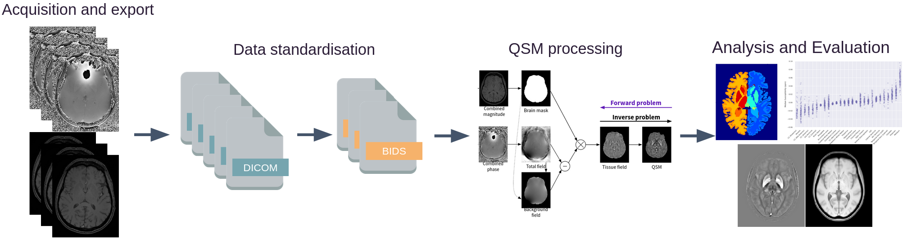
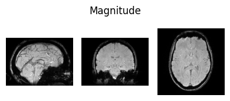
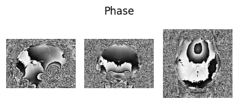
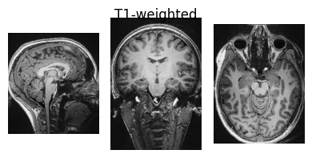
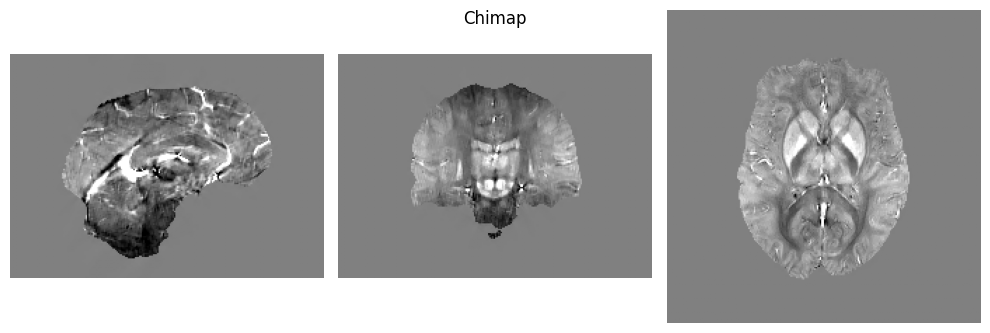
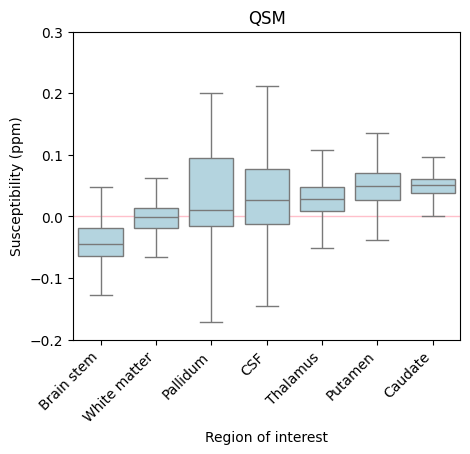

QSMxT#
Author: Ashley Stewart
Date: 25 Aug 2025
License:
Note: If this notebook uses neuroimaging tools from Neurocontainers, those tools retain their original licenses. Please see Neurodesk citation guidelines for details.
Citation and Resources:#
Tools included in this workflow#
QSMxT: Stewart AW, Robinson SD, O’Brien K, et al. QSMxT: Robust masking and artifact reduction for quantitative susceptibility mapping. Magnetic Resonance in Medicine. 2022;87(3):1289-1300. doi:10.1002/mrm.29048
QSMxT: Stewart AW, Bollman S, et al. QSMxT/QSMxT. GitHub; 2022. https://github.com/QSMxT/QSM
Dataset#
Bollmann, S., & Stewart, A. (2023, August 7). QSM DICOM testdata for QSMxT pipeline. Retrieved from osf.io/ru43c
QSMxT Interactive Notebook#
This interactive notebook estimates Quantitative Susceptibility Maps (QSMs) for two gradient-echo (GRE) MRI acquisitions using QSMxT provided by the Neurodesk project.
What is QSM?#
QSM is a form of quantitative MRI (qMRI) that estimates the magnetic susceptibility distribution across an imaged object. Magnetic susceptibility is the degree to which a material becomes magnetised by an external magnetic field. Major contributors to susceptibility include iron, calcium, and myelin, with the susceptibility of water typically approximating a zero-reference, though it is slightly diamagnetic. Read more about QSM here.
What is QSMxT?#
QSMxT is a suite of tools for building and running automated pipelines for QSM that:
is available open-source without any licensing required;
is distributed as a software container making it straightforward to access and install (Neurodesk!)
scales its processing to execute across many acquisitions through jobs parallelisation (using multiple processors or HPCs) provided by Nipype;
automates steps that usually require manual intervention and scripting, including:
DICOM to BIDS conversion;
QSM reconstruction using a range of algorithms;
segmentation using FastSurfer;
group space generation using ANTs;
export of susceptibility statistics by subject and region of interest (ROI) to CSV.

How do I access QSMxT?#
There are a few ways you can access QSMxT:
This notebook: You can access QSMxT in this notebook right now!
If you are running this on a Neurodesk Play instance, you can upload your own data into the sidebar via drag-and-drop.
Neurodesktop: QSMxT is in the applications menu of Neurodesktop.
On Neurodesk Play, upload your own data into the desktop via drag-and-drop.
On a local install of Neurodesk, bring any necessary files into the shared
~/neurodesktop-storagedirectory
Local install: QSMxT can also be installed via the Docker container
HPC install: QSMxT can also be installed via the Singularity container for use on HPCs
Download example DICOMs#
Here, we download some example DICOMs from our OSF repository for QSMxT.
These data include GRE and T1-weighted acquisitions for one subject (duplicated to act as two subjects).
!osf -p ru43c clone . > /dev/null 2>&1
!tar xf osfstorage/dicoms-unsorted.tar
!rm -rf osfstorage/
!tree dicoms-unsorted | head
!echo -e "...\nThere are `ls dicoms-unsorted | wc -l` unsorted DICOMs in ./dicoms-unsorted/"
dicoms-unsorted
├── MR.1.1.dcm
├── MR.1.10.dcm
├── MR.1.100.dcm
├── MR.1.101.dcm
├── MR.1.102.dcm
├── MR.1.103.dcm
├── MR.1.104.dcm
├── MR.1.105.dcm
├── MR.1.106.dcm
...
There are 1216 unsorted DICOMs in ./dicoms-unsorted/
Load QSMxT#
To load QSMxT inside a notebook, we can use the available module system:
import module
await module.load('qsmxt/8.1.1')
!qsmxt --version
[INFO]: QSMxT v8.1.1
Data standardisation#
QSMxT requires input data to conform to the Brain Imaging Data Structure (BIDS).
Luckily, QSMxT also provides scripts that can convert unorganised NIfTI or DICOM images to BIDS. If you are using NIfTI images and do not have DICOMs, see nifti-convert.
Convert DICOM to BIDS#
The DICOM to BIDS conversion must identify which series should be used for QSM reconstruction (e.g. MEGRE), and which series should be used for segmentation (T1-weighted). Because this information is not stored in the DICOM header in a standardised way, it can only be estimated based on other fields, or the user must identify series themselves.
If QSMxT is run interactively, the user will be prompted to identify the relevant series. However, because we are running QSMxT in a notebook, we disable the interactivity using --auto_yes and allow QSMxT to guess the intended purpose of each acquisition. In this case, it makes the right guess:
!dicom-convert dicoms-unsorted bids --auto_yes
/opt/miniconda-4.12.0/lib/python3.8/site-packages/dicompare/io.py:30: UserWarning: The DICOM readers are highly experimental, unstable, and only work for Siemens time-series at the moment
Please use with caution. We would be grateful for your help in improving them
from nibabel.nicom.csareader import get_csa_header
[INFO]: Running QSMxT 8.1.1
[INFO]: Command: /opt/miniconda-4.12.0/bin/dicom-convert dicoms-unsorted bids --auto_yes
[INFO]: Python interpreter: /opt/miniconda-4.12.0/bin/python3.8
Loading DICOM files: 100%|██████████████████| 1216/1216 [00:12<00:00, 97.92it/s]
[INFO]: Loaded DICOM session in 12.64 seconds
/opt/miniconda-4.12.0/lib/python3.8/site-packages/dicompare/acquisition.py:144: PerformanceWarning: DataFrame is highly fragmented. This is usually the result of calling `frame.insert` many times, which has poor performance. Consider joining all columns at once using pd.concat(axis=1) instead. To get a de-fragmented frame, use `newframe = frame.copy()`
session_df["BaseAcquisition"] = "acq-" + session_df[acquisition_fields].apply(
/opt/miniconda-4.12.0/lib/python3.8/site-packages/dicompare/acquisition.py:195: PerformanceWarning: DataFrame is highly fragmented. This is usually the result of calling `frame.insert` many times, which has poor performance. Consider joining all columns at once using pd.concat(axis=1) instead. To get a de-fragmented frame, use `newframe = frame.copy()`
session_df.loc[param_group.index, "AcquisitionSignature"] = signature
/opt/miniconda-4.12.0/lib/python3.8/site-packages/dicompare/acquisition.py:218: PerformanceWarning: DataFrame is highly fragmented. This is usually the result of calling `frame.insert` many times, which has poor performance. Consider joining all columns at once using pd.concat(axis=1) instead. To get a de-fragmented frame, use `newframe = frame.copy()`
session_df["RunNumber"] = 1
/opt/miniconda-4.12.0/lib/python3.8/site-packages/dicompare/acquisition.py:301: PerformanceWarning: DataFrame is highly fragmented. This is usually the result of calling `frame.insert` many times, which has poor performance. Consider joining all columns at once using pd.concat(axis=1) instead. To get a de-fragmented frame, use `newframe = frame.copy()`
session_df["Acquisition"] = session_df["AcquisitionSignature"].fillna("Unknown").astype(str)
[INFO]: Auto-assigning initial labels
[INFO]: Auto-assigned selections:
Acquisition ... Description
0 acq-mp2ragehighres0p5isoslab ...
1 acq-qsmp21mmisote20 ...
2 acq-qsmp21mmisote20 ...
[3 rows x 7 columns]
[INFO]: Merging selections into dataframe...
[INFO]: Processing base group: ('dev_siemens^SB', 1, 20170705, 'acq-mp2ragehighres0p5isoslab', 'mp2rage_highRes_0p5iso_slab_UNI-DEN', 1, '1.2.276.0.7230010.3.1.3.0.4480.1677042698.772469', 'NA')
[INFO]: Found 1 unique Types in this group
[INFO]: Processing Type group: T1w with 288 rows
[INFO]: Found multiple DICOM paths for Type 'T1w', grouping by EchoNumber
[INFO]: Processing Echo group: 1.0 with 288 rows
[INFO]: Converting group with 288 rows
[INFO]: Running command: '"dcm2niix" -o "/home/jovyan/Git_repositories/neurodeskedu/books/examples/structural_imaging/bids/temp_convert" -f "temp_output" -z n -m o "/home/jovyan/Git_repositories/neurodeskedu/books/examples/structural_imaging/bids/temp_convert"'
Chris Rorden's dcm2niiX version v1.0.20240202 (JP2:OpenJPEG) (JP-LS:CharLS) GCC11.4.0 x86-64 (64-bit Linux)
Found 288 DICOM file(s)
Convert 288 DICOM as /home/jovyan/Git_repositories/neurodeskedu/books/examples/structural_imaging/bids/temp_convert/temp_output (378x420x288x1)
Conversion required 1.342089 seconds (1.339863 for core code).
[INFO]: Processing base group: ('dev_siemens^SB', 1, 20170705, 'acq-qsmp21mmisote20', 'QSM_p2_1mmIso_TE20', 1, '1.3.12.2.1107.5.2.43.167001.2017070513471948579426649.0.0.0', 'HC1-7')
[INFO]: Found 1 unique Types in this group
[INFO]: Processing Type group: Mag with 160 rows
[INFO]: Found multiple DICOM paths for Type 'Mag', grouping by EchoNumber
[INFO]: Processing Echo group: 1.0 with 160 rows
[INFO]: Converting group with 160 rows
[INFO]: Running command: '"dcm2niix" -o "/home/jovyan/Git_repositories/neurodeskedu/books/examples/structural_imaging/bids/temp_convert" -f "temp_output" -z n -m o "/home/jovyan/Git_repositories/neurodeskedu/books/examples/structural_imaging/bids/temp_convert"'
Chris Rorden's dcm2niiX version v1.0.20240202 (JP2:OpenJPEG) (JP-LS:CharLS) GCC11.4.0 x86-64 (64-bit Linux)
Found 160 DICOM file(s)
Convert 160 DICOM as /home/jovyan/Git_repositories/neurodeskedu/books/examples/structural_imaging/bids/temp_convert/temp_output (224x224x160x1)
Conversion required 0.180088 seconds (0.179909 for core code).
[INFO]: Processing base group: ('dev_siemens^SB', 1, 20170705, 'acq-qsmp21mmisote20', 'QSM_p2_1mmIso_TE20', 1, '1.3.12.2.1107.5.2.43.167001.2017070513471948580526650.0.0.0', 'HC1-7')
[INFO]: Found 1 unique Types in this group
[INFO]: Processing Type group: Phase with 160 rows
[INFO]: Found multiple DICOM paths for Type 'Phase', grouping by EchoNumber
[INFO]: Processing Echo group: 1.0 with 160 rows
[INFO]: Converting group with 160 rows
[INFO]: Running command: '"dcm2niix" -o "/home/jovyan/Git_repositories/neurodeskedu/books/examples/structural_imaging/bids/temp_convert" -f "temp_output" -z n -m o "/home/jovyan/Git_repositories/neurodeskedu/books/examples/structural_imaging/bids/temp_convert"'
Chris Rorden's dcm2niiX version v1.0.20240202 (JP2:OpenJPEG) (JP-LS:CharLS) GCC11.4.0 x86-64 (64-bit Linux)
Found 160 DICOM file(s)
Convert 160 DICOM as /home/jovyan/Git_repositories/neurodeskedu/books/examples/structural_imaging/bids/temp_convert/temp_output_ph (224x224x160x1)
Conversion required 0.194243 seconds (0.194181 for core code).
[INFO]: Processing base group: ('dev_siemens^SB', 2, 20170705, 'acq-mp2ragehighres0p5isoslab', 'mp2rage_highRes_0p5iso_slab_UNI-DEN', 1, 2, 'NA')
[INFO]: Found 1 unique Types in this group
[INFO]: Processing Type group: T1w with 288 rows
[INFO]: Found multiple DICOM paths for Type 'T1w', grouping by EchoNumber
[INFO]: Processing Echo group: 1.0 with 288 rows
[INFO]: Converting group with 288 rows
[INFO]: Running command: '"dcm2niix" -o "/home/jovyan/Git_repositories/neurodeskedu/books/examples/structural_imaging/bids/temp_convert" -f "temp_output" -z n -m o "/home/jovyan/Git_repositories/neurodeskedu/books/examples/structural_imaging/bids/temp_convert"'
Chris Rorden's dcm2niiX version v1.0.20240202 (JP2:OpenJPEG) (JP-LS:CharLS) GCC11.4.0 x86-64 (64-bit Linux)
Found 288 DICOM file(s)
Convert 288 DICOM as /home/jovyan/Git_repositories/neurodeskedu/books/examples/structural_imaging/bids/temp_convert/temp_output (378x420x288x1)
Conversion required 1.336703 seconds (1.333534 for core code).
[INFO]: Processing base group: ('dev_siemens^SB', 2, 20170705, 'acq-qsmp21mmisote20', 'QSM_p2_1mmIso_TE20', 1, 1, 'HC1-7')
[INFO]: Found 1 unique Types in this group
[INFO]: Processing Type group: Mag with 160 rows
[INFO]: Found multiple DICOM paths for Type 'Mag', grouping by EchoNumber
[INFO]: Processing Echo group: 1.0 with 160 rows
[INFO]: Converting group with 160 rows
[INFO]: Running command: '"dcm2niix" -o "/home/jovyan/Git_repositories/neurodeskedu/books/examples/structural_imaging/bids/temp_convert" -f "temp_output" -z n -m o "/home/jovyan/Git_repositories/neurodeskedu/books/examples/structural_imaging/bids/temp_convert"'
Chris Rorden's dcm2niiX version v1.0.20240202 (JP2:OpenJPEG) (JP-LS:CharLS) GCC11.4.0 x86-64 (64-bit Linux)
Found 160 DICOM file(s)
Convert 160 DICOM as /home/jovyan/Git_repositories/neurodeskedu/books/examples/structural_imaging/bids/temp_convert/temp_output (224x224x160x1)
Conversion required 0.171474 seconds (0.171362 for core code).
[INFO]: Processing base group: ('dev_siemens^SB', 2, 20170705, 'acq-qsmp21mmisote20', 'QSM_p2_1mmIso_TE20', 1, 3, 'HC1-7')
[INFO]: Found 1 unique Types in this group
[INFO]: Processing Type group: Phase with 160 rows
[INFO]: Found multiple DICOM paths for Type 'Phase', grouping by EchoNumber
[INFO]: Processing Echo group: 1.0 with 160 rows
[INFO]: Converting group with 160 rows
[INFO]: Running command: '"dcm2niix" -o "/home/jovyan/Git_repositories/neurodeskedu/books/examples/structural_imaging/bids/temp_convert" -f "temp_output" -z n -m o "/home/jovyan/Git_repositories/neurodeskedu/books/examples/structural_imaging/bids/temp_convert"'
Chris Rorden's dcm2niiX version v1.0.20240202 (JP2:OpenJPEG) (JP-LS:CharLS) GCC11.4.0 x86-64 (64-bit Linux)
Found 160 DICOM file(s)
Convert 160 DICOM as /home/jovyan/Git_repositories/neurodeskedu/books/examples/structural_imaging/bids/temp_convert/temp_output_ph (224x224x160x1)
Conversion required 0.187063 seconds (0.186957 for core code).
[INFO]: Scanning for multi-coil data to merge...
[INFO]: Scanning for multi-coil runs to combine...
[INFO]: Checking for complex or polar data requiring fixing...
Loading NIfTIs: 100%|███████████████████████████| 6/6 [00:00<00:00, 1169.14it/s]
[INFO]: Finished
!tree bids
bids
├── log_2026-01-22_15-11-57144069.txt
├── references.txt
├── sub-1
│ └── ses-20170705
│ └── anat
│ ├── sub-1_ses-20170705_acq-acqmp2ragehighres0p5isoslab_part-mag_T1w.json
│ ├── sub-1_ses-20170705_acq-acqmp2ragehighres0p5isoslab_part-mag_T1w.nii
│ ├── sub-1_ses-20170705_acq-acqqsmp21mmisote20_part-mag_T2starw.json
│ ├── sub-1_ses-20170705_acq-acqqsmp21mmisote20_part-mag_T2starw.nii
│ ├── sub-1_ses-20170705_acq-acqqsmp21mmisote20_part-phase_T2starw.json
│ └── sub-1_ses-20170705_acq-acqqsmp21mmisote20_part-phase_T2starw.nii
└── sub-2
└── ses-20170705
└── anat
├── sub-2_ses-20170705_acq-acqmp2ragehighres0p5isoslab_part-mag_T1w.json
├── sub-2_ses-20170705_acq-acqmp2ragehighres0p5isoslab_part-mag_T1w.nii
├── sub-2_ses-20170705_acq-acqqsmp21mmisote20_part-mag_T2starw.json
├── sub-2_ses-20170705_acq-acqqsmp21mmisote20_part-mag_T2starw.nii
├── sub-2_ses-20170705_acq-acqqsmp21mmisote20_part-phase_T2starw.json
└── sub-2_ses-20170705_acq-acqqsmp21mmisote20_part-phase_T2starw.nii
7 directories, 14 files
Inspect input data#
Here we define a function we will use to visualise NIfTI images so we can view some of the input data:
%%capture
!pip install seaborn numpy nibabel pandas nilearn
from glob import glob
from matplotlib import pyplot as plt
import numpy as np
import nibabel as nib
def show_nii(nii_path, title=None, figsize=(4,5), cmap='gray', **imshow_args):
# load data\n",
data_1 = nib.load(nii_path).get_fdata()
# get middle slices\n",
slc_data1 = np.rot90(data_1[np.shape(data_1)[0]//2,:,:])
slc_data2 = np.rot90(data_1[:,np.shape(data_1)[1]//2,:])
slc_data3 = np.rot90(data_1[:,:,np.shape(data_1)[2]//2])
# show slices\n",
fig, axes = plt.subplots(nrows=1, ncols=3, figsize=figsize)
if title: plt.suptitle(title)
axes[0].imshow(slc_data1, cmap=cmap, **imshow_args)
axes[1].imshow(slc_data2, cmap=cmap, **imshow_args)
axes[2].imshow(slc_data3, cmap=cmap, **imshow_args)
axes[0].axis('off')
axes[1].axis('off')
axes[2].axis('off')
fig.tight_layout()
fig.subplots_adjust(top=1.55)
plt.show()
show_nii(glob("bids/sub-*/ses-*/anat/*mag*T2starw*nii*")[0], title="Magnitude", vmax=500)
show_nii(glob("bids/sub-*/ses-*/anat/*phase*T2starw*nii*")[0], title="Phase")
show_nii(glob("bids/sub-*/ses-*/anat/*T1w*nii*")[0], title="T1-weighted")



Interactive Display using Niivue#
from ipyniivue import NiiVue
nv_T1 = NiiVue()
nv_T1.load_volumes([{"path": glob("bids/sub-*/ses-*/anat/*T1w*nii*")[0]}])
nv_T1
Run QSMxT#
We are now ready to run QSMxT! We will generate susceptibility maps and segmentations, and export analysis CSVs to file.
The usual way of running QSMxT is to use qsmxt bids_dir. This will launch an interactive command-line interface (CLI) to setup your desired pipelines. However, since we are running this in a notebook, we need to use command-line arguments to by-pass the interface and execute a pipeline.
But first, let’s consider our pipeline settings. For QSM reconstruction, QSMxT provides a range of sensible defaults fit for different purposes. We can list the premade QSM pipelines using --list_premades. For the full pipeline details used for each premade pipeline, see qsm_pipelines.json.
!qsmxt --list_premades
=== Premade pipelines ===
default: Default QSMxT settings (GRE; assumes human brain)
gre: Applies suggested settings for 3D-GRE images
epi: Applies suggested settings for 3D-EPI images (assumes human brain)
bet: Applies a traditional BET-masking approach (artefact reduction unavailable; assumes human brain)
fast: Applies a set of fast algorithms
body: Applies suggested settings for non-brain applications
nextqsm: Applies suggested settings for running the NeXtQSM algorithm (assumes human brain)
[INFO]: Finished
For this demonstration, we will go with the fast pipeline. To export segmentations and analysis results, we will use --do_segmentation and --do_analysis. The --auto_yes option avoid the interactive CLI interface that cannot be used in a notebook:
!qsmxt bids \
--premade fast \
--do_qsm \
--do_segmentation \
--do_analysis \
--auto_yes
[INFO]: QSMxT v8.1.1
[INFO]: Python interpreter: /opt/miniconda-4.12.0/bin/python3.8
[INFO]: Command: qsmxt /home/jovyan/Git_repositories/neurodeskedu/books/examples/structural_imaging/bids --premade 'fast' --do_qsm --do_segmentation --do_analysis --auto_yes
[WARNING]: Pipeline is NOT guidelines compliant (see https://doi.org/10.1002/mrm.30006):; Phase-quality-based masking recommended
[INFO]: Available memory: 208.53 GB
[INFO]: Creating QSMxT workflow for sub-1.ses-20170705.acq-acqmp2ragehighres0p5isoslab.T1w...
[INFO]: Creating QSMxT workflow for sub-1.ses-20170705.acq-acqqsmp21mmisote20.T2starw...
[INFO]: Creating QSMxT workflow for sub-2.ses-20170705.acq-acqmp2ragehighres0p5isoslab.T1w...
[INFO]: Creating QSMxT workflow for sub-2.ses-20170705.acq-acqqsmp21mmisote20.T2starw...
[INFO]: Running using MultiProc plugin with n_procs=32
260122-15:12:34,399 nipype.workflow INFO:
Workflow qsmxt-workflow settings: ['check', 'execution', 'logging', 'monitoring']
260122-15:12:34,437 nipype.workflow INFO:
Running in parallel.
260122-15:12:34,452 nipype.workflow INFO:
[MultiProc] Running 0 tasks, and 24 jobs ready. Free memory (GB): 219.48/219.48, Free processors: 32/32.
260122-15:12:34,997 nipype.workflow INFO:
[Node] Setting-up "qsmxt-workflow.sub-1.ses-20170705.qsm_acq-acqmp2ragehighres0p5isoslab_T1w.nibabel_read-nii" in "/home/jovyan/Git_repositories/neurodeskedu/books/examples/structural_imaging/bids/derivatives/workflow/qsmxt-workflow/sub-1/ses-20170705/qsm_acq-acqmp2ragehighres0p5isoslab_T1w/nibabel_read-nii".
260122-15:12:34,995 nipype.workflow INFO:
[Node] Setting-up "qsmxt-workflow.sub-1.ses-20170705.qsm_acq-acqmp2ragehighres0p5isoslab_T1w.func_read-json-me" in "/home/jovyan/Git_repositories/neurodeskedu/books/examples/structural_imaging/bids/derivatives/workflow/qsmxt-workflow/sub-1/ses-20170705/qsm_acq-acqmp2ragehighres0p5isoslab_T1w/func_read-json-me".
260122-15:12:35,2 nipype.workflow INFO:
[Node] Executing "nibabel_read-nii" <nipype.interfaces.utility.wrappers.Function>
260122-15:12:35,4 nipype.workflow INFO:
[Node] Setting-up "qsmxt-workflow.sub-1.ses-20170705.qsm_acq-acqmp2ragehighres0p5isoslab_T1w.fastsurfer_segment-t1" in "/home/jovyan/Git_repositories/neurodeskedu/books/examples/structural_imaging/bids/derivatives/workflow/qsmxt-workflow/sub-1/ses-20170705/qsm_acq-acqmp2ragehighres0p5isoslab_T1w/fastsurfer_segment-t1".
260122-15:12:35,12 nipype.workflow INFO:
[Node] Setting-up "qsmxt-workflow.sub-1.ses-20170705.qsm_acq-acqmp2ragehighres0p5isoslab_T1w.ants_register-t1-to-qsm" in "/home/jovyan/Git_repositories/neurodeskedu/books/examples/structural_imaging/bids/derivatives/workflow/qsmxt-workflow/sub-1/ses-20170705/qsm_acq-acqmp2ragehighres0p5isoslab_T1w/ants_register-t1-to-qsm".
260122-15:12:35,19 nipype.workflow INFO:
[Node] Setting-up "qsmxt-workflow.sub-1.ses-20170705.qsm_acq-acqqsmp21mmisote20_T2starw.nibabel_as-canonical" in "/home/jovyan/Git_repositories/neurodeskedu/books/examples/structural_imaging/bids/derivatives/workflow/qsmxt-workflow/sub-1/ses-20170705/qsm_acq-acqqsmp21mmisote20_T2starw/nibabel_as-canonical".
260122-15:12:35,26 nipype.workflow INFO:
[Node] Setting-up "qsmxt-workflow.sub-2.ses-20170705.qsm_acq-acqmp2ragehighres0p5isoslab_T1w.func_read-json-se" in "/home/jovyan/Git_repositories/neurodeskedu/books/examples/structural_imaging/bids/derivatives/workflow/qsmxt-workflow/sub-2/ses-20170705/qsm_acq-acqmp2ragehighres0p5isoslab_T1w/func_read-json-se".
260122-15:12:35,26 nipype.workflow INFO:
[Node] Setting-up "qsmxt-workflow.sub-1.ses-20170705.qsm_acq-acqqsmp21mmisote20_T2starw.nibabel_read-nii" in "/home/jovyan/Git_repositories/neurodeskedu/books/examples/structural_imaging/bids/derivatives/workflow/qsmxt-workflow/sub-1/ses-20170705/qsm_acq-acqqsmp21mmisote20_T2starw/nibabel_read-nii".
260122-15:12:35,39 nipype.workflow INFO:
[Node] Executing "fastsurfer_segment-t1" <qsmxt.interfaces.nipype_interface_fastsurfer.FastSurferInterface>
260122-15:12:35,39 nipype.workflow INFO:
[Node] Executing "nibabel_as-canonical" <nipype.interfaces.utility.wrappers.Function>
260122-15:12:35,40 nipype.workflow INFO:
[Node] Executing "func_read-json-se" <nipype.interfaces.utility.wrappers.Function>
260122-15:12:35,42 nipype.workflow INFO:
[Node] Executing "ants_register-t1-to-qsm" <nipype.interfaces.ants.registration.RegistrationSynQuick>
260122-15:12:35,43 nipype.workflow INFO:
[Node] Finished "func_read-json-se", elapsed time 0.001191s.
260122-15:12:35,44 nipype.workflow INFO:
[Node] Executing "nibabel_read-nii" <nipype.interfaces.utility.wrappers.Function>
260122-15:12:34,998 nipype.workflow INFO:
[Node] Setting-up "qsmxt-workflow.sub-1.ses-20170705.qsm_acq-acqmp2ragehighres0p5isoslab_T1w.nibabel_as-canonical" in "/home/jovyan/Git_repositories/neurodeskedu/books/examples/structural_imaging/bids/derivatives/workflow/qsmxt-workflow/sub-1/ses-20170705/qsm_acq-acqmp2ragehighres0p5isoslab_T1w/nibabel_as-canonical".
260122-15:12:35,9 nipype.workflow INFO:
[Node] Finished "nibabel_read-nii", elapsed time 0.004207s.
260122-15:12:35,11 nipype.workflow INFO:
[Node] Executing "func_read-json-me" <nipype.interfaces.utility.wrappers.Function>
260122-15:12:35,66 nipype.workflow INFO:
[Node] Executing "nibabel_as-canonical" <nipype.interfaces.utility.wrappers.Function>
260122-15:12:35,67 nipype.workflow INFO:
[Node] Finished "nibabel_read-nii", elapsed time 0.020032s.
260122-15:12:35,5 nipype.workflow INFO:
[Node] Setting-up "qsmxt-workflow.sub-1.ses-20170705.qsm_acq-acqqsmp21mmisote20_T2starw.func_read-json-me" in "/home/jovyan/Git_repositories/neurodeskedu/books/examples/structural_imaging/bids/derivatives/workflow/qsmxt-workflow/sub-1/ses-20170705/qsm_acq-acqqsmp21mmisote20_T2starw/func_read-json-me".
260122-15:12:35,27 nipype.workflow INFO:
[Node] Setting-up "qsmxt-workflow.sub-2.ses-20170705.qsm_acq-acqmp2ragehighres0p5isoslab_T1w.func_read-json-me" in "/home/jovyan/Git_repositories/neurodeskedu/books/examples/structural_imaging/bids/derivatives/workflow/qsmxt-workflow/sub-2/ses-20170705/qsm_acq-acqmp2ragehighres0p5isoslab_T1w/func_read-json-me".
260122-15:12:35,97 nipype.workflow INFO:
[Node] Finished "func_read-json-me", elapsed time 0.019262s.
260122-15:12:34,998 nipype.workflow INFO:
[Node] Setting-up "qsmxt-workflow.sub-1.ses-20170705.qsm_acq-acqmp2ragehighres0p5isoslab_T1w.func_read-json-se" in "/home/jovyan/Git_repositories/neurodeskedu/books/examples/structural_imaging/bids/derivatives/workflow/qsmxt-workflow/sub-1/ses-20170705/qsm_acq-acqmp2ragehighres0p5isoslab_T1w/func_read-json-se".
260122-15:12:35,113 nipype.workflow INFO:
[Node] Finished "nibabel_as-canonical", elapsed time 0.070912s.
260122-15:12:35,113 nipype.workflow INFO:
[Node] Executing "func_read-json-me" <nipype.interfaces.utility.wrappers.Function>
260122-15:12:35,114 nipype.workflow INFO:
[Node] Executing "func_read-json-se" <nipype.interfaces.utility.wrappers.Function>
260122-15:12:35,117 nipype.workflow INFO:
[Node] Finished "func_read-json-se", elapsed time 0.001276s.
260122-15:12:35,118 nipype.workflow INFO:
[Node] Finished "func_read-json-me", elapsed time 0.001832s.
260122-15:12:35,11 nipype.workflow INFO:
[Node] Setting-up "qsmxt-workflow.sub-1.ses-20170705.qsm_acq-acqqsmp21mmisote20_T2starw.func_read-json-se" in "/home/jovyan/Git_repositories/neurodeskedu/books/examples/structural_imaging/bids/derivatives/workflow/qsmxt-workflow/sub-1/ses-20170705/qsm_acq-acqqsmp21mmisote20_T2starw/func_read-json-se".
260122-15:12:35,27 nipype.workflow INFO:
[Node] Setting-up "qsmxt-workflow.sub-1.ses-20170705.qsm_acq-acqqsmp21mmisote20_T2starw.fastsurfer_segment-t1" in "/home/jovyan/Git_repositories/neurodeskedu/books/examples/structural_imaging/bids/derivatives/workflow/qsmxt-workflow/sub-1/ses-20170705/qsm_acq-acqqsmp21mmisote20_T2starw/fastsurfer_segment-t1".
260122-15:12:35,136 nipype.workflow INFO:
[Node] Executing "func_read-json-se" <nipype.interfaces.utility.wrappers.Function>
260122-15:12:35,138 nipype.workflow INFO:
[Node] Executing "fastsurfer_segment-t1" <qsmxt.interfaces.nipype_interface_fastsurfer.FastSurferInterface>
260122-15:12:35,140 nipype.workflow INFO:
[Node] Finished "func_read-json-se", elapsed time 0.001722s.
260122-15:12:35,113 nipype.workflow INFO:
[Node] Executing "func_read-json-me" <nipype.interfaces.utility.wrappers.Function>
260122-15:12:35,117 nipype.workflow INFO:
[Node] Finished "nibabel_as-canonical", elapsed time 0.037319s.
260122-15:12:35,180 nipype.workflow INFO:
[Node] Finished "func_read-json-me", elapsed time 0.007902s.
260122-15:12:36,469 nipype.workflow INFO:
[Job 0] Completed (qsmxt-workflow.sub-1.ses-20170705.qsm_acq-acqmp2ragehighres0p5isoslab_T1w.func_read-json-me).
260122-15:12:36,477 nipype.workflow INFO:
[Job 1] Completed (qsmxt-workflow.sub-1.ses-20170705.qsm_acq-acqmp2ragehighres0p5isoslab_T1w.func_read-json-se).
260122-15:12:36,478 nipype.workflow INFO:
[Job 2] Completed (qsmxt-workflow.sub-1.ses-20170705.qsm_acq-acqmp2ragehighres0p5isoslab_T1w.nibabel_read-nii).
260122-15:12:36,479 nipype.workflow INFO:
[Job 3] Completed (qsmxt-workflow.sub-1.ses-20170705.qsm_acq-acqmp2ragehighres0p5isoslab_T1w.nibabel_as-canonical).
260122-15:12:36,497 nipype.workflow INFO:
[Job 6] Completed (qsmxt-workflow.sub-1.ses-20170705.qsm_acq-acqqsmp21mmisote20_T2starw.func_read-json-me).
260122-15:12:36,498 nipype.workflow INFO:
[Job 7] Completed (qsmxt-workflow.sub-1.ses-20170705.qsm_acq-acqqsmp21mmisote20_T2starw.func_read-json-se).
260122-15:12:36,498 nipype.workflow INFO:
[Job 8] Completed (qsmxt-workflow.sub-1.ses-20170705.qsm_acq-acqqsmp21mmisote20_T2starw.nibabel_read-nii).
260122-15:12:36,499 nipype.workflow INFO:
[Job 9] Completed (qsmxt-workflow.sub-1.ses-20170705.qsm_acq-acqqsmp21mmisote20_T2starw.nibabel_as-canonical).
260122-15:12:36,505 nipype.workflow INFO:
[Job 12] Completed (qsmxt-workflow.sub-2.ses-20170705.qsm_acq-acqmp2ragehighres0p5isoslab_T1w.func_read-json-me).
260122-15:12:36,506 nipype.workflow INFO:
[Job 13] Completed (qsmxt-workflow.sub-2.ses-20170705.qsm_acq-acqmp2ragehighres0p5isoslab_T1w.func_read-json-se).
260122-15:12:36,511 nipype.workflow INFO:
[MultiProc] Running 3 tasks, and 14 jobs ready. Free memory (GB): 187.48/219.48, Free processors: 10/32.
Currently running:
* qsmxt-workflow.sub-1.ses-20170705.qsm_acq-acqqsmp21mmisote20_T2starw.fastsurfer_segment-t1
* qsmxt-workflow.sub-1.ses-20170705.qsm_acq-acqmp2ragehighres0p5isoslab_T1w.ants_register-t1-to-qsm
* qsmxt-workflow.sub-1.ses-20170705.qsm_acq-acqmp2ragehighres0p5isoslab_T1w.fastsurfer_segment-t1
260122-15:12:36,917 nipype.workflow INFO:
[Node] Setting-up "qsmxt-workflow.sub-2.ses-20170705.qsm_acq-acqmp2ragehighres0p5isoslab_T1w.nibabel_read-nii" in "/home/jovyan/Git_repositories/neurodeskedu/books/examples/structural_imaging/bids/derivatives/workflow/qsmxt-workflow/sub-2/ses-20170705/qsm_acq-acqmp2ragehighres0p5isoslab_T1w/nibabel_read-nii".
260122-15:12:36,918 nipype.workflow INFO:
[Node] Setting-up "qsmxt-workflow.sub-2.ses-20170705.qsm_acq-acqmp2ragehighres0p5isoslab_T1w.nibabel_as-canonical" in "/home/jovyan/Git_repositories/neurodeskedu/books/examples/structural_imaging/bids/derivatives/workflow/qsmxt-workflow/sub-2/ses-20170705/qsm_acq-acqmp2ragehighres0p5isoslab_T1w/nibabel_as-canonical".
260122-15:12:36,925 nipype.workflow INFO:
[Node] Setting-up "qsmxt-workflow.sub-2.ses-20170705.qsm_acq-acqqsmp21mmisote20_T2starw.func_read-json-se" in "/home/jovyan/Git_repositories/neurodeskedu/books/examples/structural_imaging/bids/derivatives/workflow/qsmxt-workflow/sub-2/ses-20170705/qsm_acq-acqqsmp21mmisote20_T2starw/func_read-json-se".
260122-15:12:36,954 nipype.workflow INFO:
[Node] Executing "nibabel_read-nii" <nipype.interfaces.utility.wrappers.Function>
260122-15:12:36,954 nipype.workflow INFO:
[Node] Setting-up "qsmxt-workflow.sub-1.ses-20170705.qsm_acq-acqqsmp21mmisote20_T2starw.ants_register-t1-to-qsm" in "/home/jovyan/Git_repositories/neurodeskedu/books/examples/structural_imaging/bids/derivatives/workflow/qsmxt-workflow/sub-1/ses-20170705/qsm_acq-acqqsmp21mmisote20_T2starw/ants_register-t1-to-qsm".
260122-15:12:36,965 nipype.workflow INFO:
[Node] Executing "nibabel_as-canonical" <nipype.interfaces.utility.wrappers.Function>
260122-15:12:36,918 nipype.workflow INFO:
[Node] Setting-up "qsmxt-workflow.sub-2.ses-20170705.qsm_acq-acqqsmp21mmisote20_T2starw.func_read-json-me" in "/home/jovyan/Git_repositories/neurodeskedu/books/examples/structural_imaging/bids/derivatives/workflow/qsmxt-workflow/sub-2/ses-20170705/qsm_acq-acqqsmp21mmisote20_T2starw/func_read-json-me".
260122-15:12:36,996 nipype.workflow INFO:
[Node] Executing "ants_register-t1-to-qsm" <nipype.interfaces.ants.registration.RegistrationSynQuick>
260122-15:12:36,997 nipype.workflow INFO:
[Node] Executing "func_read-json-me" <nipype.interfaces.utility.wrappers.Function>
260122-15:12:36,961 nipype.workflow INFO:
[Node] Finished "nibabel_read-nii", elapsed time 0.004703s.
260122-15:12:37,12 nipype.workflow INFO:
[Node] Finished "nibabel_as-canonical", elapsed time 0.031429s.
260122-15:12:37,14 nipype.workflow INFO:
[Node] Finished "func_read-json-me", elapsed time 0.007357s.
260122-15:12:36,977 nipype.workflow INFO:
[Node] Executing "func_read-json-se" <nipype.interfaces.utility.wrappers.Function>
260122-15:12:37,39 nipype.workflow INFO:
[Node] Finished "func_read-json-se", elapsed time 0.002181s.
260122-15:12:38,470 nipype.workflow INFO:
[Job 14] Completed (qsmxt-workflow.sub-2.ses-20170705.qsm_acq-acqmp2ragehighres0p5isoslab_T1w.nibabel_read-nii).
260122-15:12:38,471 nipype.workflow INFO:
[Job 15] Completed (qsmxt-workflow.sub-2.ses-20170705.qsm_acq-acqmp2ragehighres0p5isoslab_T1w.nibabel_as-canonical).
260122-15:12:38,472 nipype.workflow INFO:
[Job 18] Completed (qsmxt-workflow.sub-2.ses-20170705.qsm_acq-acqqsmp21mmisote20_T2starw.func_read-json-me).
260122-15:12:38,473 nipype.workflow INFO:
[Job 19] Completed (qsmxt-workflow.sub-2.ses-20170705.qsm_acq-acqqsmp21mmisote20_T2starw.func_read-json-se).
260122-15:12:38,479 nipype.workflow INFO:
[MultiProc] Running 4 tasks, and 10 jobs ready. Free memory (GB): 179.48/219.48, Free processors: 4/32.
Currently running:
* qsmxt-workflow.sub-1.ses-20170705.qsm_acq-acqqsmp21mmisote20_T2starw.ants_register-t1-to-qsm
* qsmxt-workflow.sub-1.ses-20170705.qsm_acq-acqqsmp21mmisote20_T2starw.fastsurfer_segment-t1
* qsmxt-workflow.sub-1.ses-20170705.qsm_acq-acqmp2ragehighres0p5isoslab_T1w.ants_register-t1-to-qsm
* qsmxt-workflow.sub-1.ses-20170705.qsm_acq-acqmp2ragehighres0p5isoslab_T1w.fastsurfer_segment-t1
260122-15:12:38,658 nipype.workflow INFO:
[Node] Setting-up "qsmxt-workflow.sub-1.ses-20170705.qsm_acq-acqqsmp21mmisote20_T2starw.nibabel_numpy_scale-phase" in "/home/jovyan/Git_repositories/neurodeskedu/books/examples/structural_imaging/bids/derivatives/workflow/qsmxt-workflow/sub-1/ses-20170705/qsm_acq-acqqsmp21mmisote20_T2starw/nibabel_numpy_scale-phase".
260122-15:12:38,657 nipype.workflow INFO:
[Node] Setting-up "qsmxt-workflow.sub-1.ses-20170705.qsm_acq-acqmp2ragehighres0p5isoslab_T1w.func_getfirst-canonical-magnitude" in "/home/jovyan/Git_repositories/neurodeskedu/books/examples/structural_imaging/bids/derivatives/workflow/qsmxt-workflow/sub-1/ses-20170705/qsm_acq-acqmp2ragehighres0p5isoslab_T1w/func_getfirst-canonical-magnitude".
260122-15:12:38,668 nipype.workflow INFO:
[Node] Setting-up "qsmxt-workflow.sub-2.ses-20170705.qsm_acq-acqqsmp21mmisote20_T2starw.nibabel_as-canonical" in "/home/jovyan/Git_repositories/neurodeskedu/books/examples/structural_imaging/bids/derivatives/workflow/qsmxt-workflow/sub-2/ses-20170705/qsm_acq-acqqsmp21mmisote20_T2starw/nibabel_as-canonical".
260122-15:12:38,684 nipype.workflow INFO:
[Node] Executing "nibabel_numpy_scale-phase" <qsmxt.interfaces.nipype_interface_processphase.ScalePhaseInterface>
260122-15:12:38,703 nipype.workflow INFO:
[Node] Executing "nibabel_as-canonical" <nipype.interfaces.utility.wrappers.Function>
260122-15:12:38,703 nipype.workflow INFO:
[Node] Executing "func_getfirst-canonical-magnitude" <nipype.interfaces.utility.wrappers.Function>
260122-15:12:38,721 nipype.workflow INFO:
[Node] Finished "func_getfirst-canonical-magnitude", elapsed time 0.005621s.
260122-15:12:38,665 nipype.workflow INFO:
[Node] Setting-up "qsmxt-workflow.sub-2.ses-20170705.qsm_acq-acqqsmp21mmisote20_T2starw.nibabel_read-nii" in "/home/jovyan/Git_repositories/neurodeskedu/books/examples/structural_imaging/bids/derivatives/workflow/qsmxt-workflow/sub-2/ses-20170705/qsm_acq-acqqsmp21mmisote20_T2starw/nibabel_read-nii".
260122-15:12:38,749 nipype.workflow INFO:
[Node] Executing "nibabel_read-nii" <nipype.interfaces.utility.wrappers.Function>
260122-15:12:38,774 nipype.workflow INFO:
[Node] Finished "nibabel_as-canonical", elapsed time 0.050134s.
260122-15:12:38,792 nipype.workflow INFO:
[Node] Finished "nibabel_read-nii", elapsed time 0.029147s.
260122-15:12:40,16 nipype.workflow INFO:
[Node] Finished "nibabel_numpy_scale-phase", elapsed time 1.327509s.
260122-15:12:40,457 nipype.workflow INFO:
[Job 20] Completed (qsmxt-workflow.sub-2.ses-20170705.qsm_acq-acqqsmp21mmisote20_T2starw.nibabel_read-nii).
260122-15:12:40,459 nipype.workflow INFO:
[Job 21] Completed (qsmxt-workflow.sub-2.ses-20170705.qsm_acq-acqqsmp21mmisote20_T2starw.nibabel_as-canonical).
260122-15:12:40,460 nipype.workflow INFO:
[Job 24] Completed (qsmxt-workflow.sub-1.ses-20170705.qsm_acq-acqmp2ragehighres0p5isoslab_T1w.func_getfirst-canonical-magnitude).
260122-15:12:40,460 nipype.workflow INFO:
[Job 26] Completed (qsmxt-workflow.sub-1.ses-20170705.qsm_acq-acqqsmp21mmisote20_T2starw.nibabel_numpy_scale-phase).
260122-15:12:40,462 nipype.workflow INFO:
[MultiProc] Running 4 tasks, and 9 jobs ready. Free memory (GB): 179.48/219.48, Free processors: 4/32.
Currently running:
* qsmxt-workflow.sub-1.ses-20170705.qsm_acq-acqqsmp21mmisote20_T2starw.ants_register-t1-to-qsm
* qsmxt-workflow.sub-1.ses-20170705.qsm_acq-acqqsmp21mmisote20_T2starw.fastsurfer_segment-t1
* qsmxt-workflow.sub-1.ses-20170705.qsm_acq-acqmp2ragehighres0p5isoslab_T1w.ants_register-t1-to-qsm
* qsmxt-workflow.sub-1.ses-20170705.qsm_acq-acqmp2ragehighres0p5isoslab_T1w.fastsurfer_segment-t1
260122-15:12:40,594 nipype.workflow INFO:
[Node] Setting-up "qsmxt-workflow.sub-2.ses-20170705.qsm_acq-acqmp2ragehighres0p5isoslab_T1w.func_getfirst-canonical-magnitude" in "/home/jovyan/Git_repositories/neurodeskedu/books/examples/structural_imaging/bids/derivatives/workflow/qsmxt-workflow/sub-2/ses-20170705/qsm_acq-acqmp2ragehighres0p5isoslab_T1w/func_getfirst-canonical-magnitude".
260122-15:12:40,595 nipype.workflow INFO:
[Node] Setting-up "qsmxt-workflow.sub-2.ses-20170705.qsm_acq-acqqsmp21mmisote20_T2starw.nibabel_numpy_scale-phase" in "/home/jovyan/Git_repositories/neurodeskedu/books/examples/structural_imaging/bids/derivatives/workflow/qsmxt-workflow/sub-2/ses-20170705/qsm_acq-acqqsmp21mmisote20_T2starw/nibabel_numpy_scale-phase".
260122-15:12:40,601 nipype.workflow INFO:
[Node] Executing "func_getfirst-canonical-magnitude" <nipype.interfaces.utility.wrappers.Function>
260122-15:12:40,601 nipype.workflow INFO:
[Node] Executing "nibabel_numpy_scale-phase" <qsmxt.interfaces.nipype_interface_processphase.ScalePhaseInterface>
260122-15:12:40,604 nipype.workflow INFO:
[Node] Finished "func_getfirst-canonical-magnitude", elapsed time 0.000881s.
260122-15:12:40,594 nipype.workflow INFO:
[Node] Setting-up "qsmxt-workflow.sub-1.ses-20170705.qsm_acq-acqqsmp21mmisote20_T2starw.func_getfirst-canonical-magnitude" in "/home/jovyan/Git_repositories/neurodeskedu/books/examples/structural_imaging/bids/derivatives/workflow/qsmxt-workflow/sub-1/ses-20170705/qsm_acq-acqqsmp21mmisote20_T2starw/func_getfirst-canonical-magnitude".
260122-15:12:40,595 nipype.workflow INFO:
[Node] Setting-up "qsmxt-workflow.sub-2.ses-20170705.qsm_acq-acqqsmp21mmisote20_T2starw.func_getfirst-canonical-magnitude" in "/home/jovyan/Git_repositories/neurodeskedu/books/examples/structural_imaging/bids/derivatives/workflow/qsmxt-workflow/sub-2/ses-20170705/qsm_acq-acqqsmp21mmisote20_T2starw/func_getfirst-canonical-magnitude".
260122-15:12:40,691 nipype.workflow INFO:
[Node] Executing "func_getfirst-canonical-magnitude" <nipype.interfaces.utility.wrappers.Function>
260122-15:12:40,711 nipype.workflow INFO:
[Node] Finished "func_getfirst-canonical-magnitude", elapsed time 0.001311s.
260122-15:12:40,691 nipype.workflow INFO:
[Node] Executing "func_getfirst-canonical-magnitude" <nipype.interfaces.utility.wrappers.Function>
260122-15:12:40,759 nipype.workflow INFO:
[Node] Finished "func_getfirst-canonical-magnitude", elapsed time 0.001235s.
260122-15:12:41,793 nipype.workflow INFO:
[Node] Finished "nibabel_numpy_scale-phase", elapsed time 1.19015s.
260122-15:12:42,460 nipype.workflow INFO:
[Job 27] Completed (qsmxt-workflow.sub-1.ses-20170705.qsm_acq-acqqsmp21mmisote20_T2starw.func_getfirst-canonical-magnitude).
260122-15:12:42,463 nipype.workflow INFO:
[Job 29] Completed (qsmxt-workflow.sub-2.ses-20170705.qsm_acq-acqmp2ragehighres0p5isoslab_T1w.func_getfirst-canonical-magnitude).
260122-15:12:42,465 nipype.workflow INFO:
[Job 31] Completed (qsmxt-workflow.sub-2.ses-20170705.qsm_acq-acqqsmp21mmisote20_T2starw.nibabel_numpy_scale-phase).
260122-15:12:42,467 nipype.workflow INFO:
[Job 32] Completed (qsmxt-workflow.sub-2.ses-20170705.qsm_acq-acqqsmp21mmisote20_T2starw.func_getfirst-canonical-magnitude).
260122-15:12:42,469 nipype.workflow INFO:
[MultiProc] Running 4 tasks, and 6 jobs ready. Free memory (GB): 179.48/219.48, Free processors: 4/32.
Currently running:
* qsmxt-workflow.sub-1.ses-20170705.qsm_acq-acqqsmp21mmisote20_T2starw.ants_register-t1-to-qsm
* qsmxt-workflow.sub-1.ses-20170705.qsm_acq-acqqsmp21mmisote20_T2starw.fastsurfer_segment-t1
* qsmxt-workflow.sub-1.ses-20170705.qsm_acq-acqmp2ragehighres0p5isoslab_T1w.ants_register-t1-to-qsm
* qsmxt-workflow.sub-1.ses-20170705.qsm_acq-acqmp2ragehighres0p5isoslab_T1w.fastsurfer_segment-t1
260122-15:12:42,583 nipype.workflow INFO:
[Node] Setting-up "qsmxt-workflow.sub-1.ses-20170705.qsm_acq-acqqsmp21mmisote20_T2starw.nibabel_numpy_nilearn_axial-resampling" in "/home/jovyan/Git_repositories/neurodeskedu/books/examples/structural_imaging/bids/derivatives/workflow/qsmxt-workflow/sub-1/ses-20170705/qsm_acq-acqqsmp21mmisote20_T2starw/nibabel_numpy_nilearn_axial-resampling".
260122-15:12:42,583 nipype.workflow INFO:
[Node] Setting-up "qsmxt-workflow.sub-2.ses-20170705.qsm_acq-acqqsmp21mmisote20_T2starw.nibabel_numpy_nilearn_axial-resampling" in "/home/jovyan/Git_repositories/neurodeskedu/books/examples/structural_imaging/bids/derivatives/workflow/qsmxt-workflow/sub-2/ses-20170705/qsm_acq-acqqsmp21mmisote20_T2starw/nibabel_numpy_nilearn_axial-resampling".
260122-15:12:42,598 nipype.workflow INFO:
[Node] Executing "nibabel_numpy_nilearn_axial-resampling" <qsmxt.interfaces.nipype_interface_axialsampling.AxialSamplingInterface>
260122-15:12:42,604 nipype.workflow INFO:
[Node] Executing "nibabel_numpy_nilearn_axial-resampling" <qsmxt.interfaces.nipype_interface_axialsampling.AxialSamplingInterface>
260122-15:12:42,608 nipype.workflow INFO:
[Node] Finished "nibabel_numpy_nilearn_axial-resampling", elapsed time 0.008503s.
260122-15:12:42,611 nipype.workflow INFO:
[Node] Finished "nibabel_numpy_nilearn_axial-resampling", elapsed time 0.005358s.
260122-15:12:44,460 nipype.workflow INFO:
[Job 36] Completed (qsmxt-workflow.sub-1.ses-20170705.qsm_acq-acqqsmp21mmisote20_T2starw.nibabel_numpy_nilearn_axial-resampling).
260122-15:12:44,462 nipype.workflow INFO:
[Job 41] Completed (qsmxt-workflow.sub-2.ses-20170705.qsm_acq-acqqsmp21mmisote20_T2starw.nibabel_numpy_nilearn_axial-resampling).
260122-15:12:44,463 nipype.workflow INFO:
[MultiProc] Running 4 tasks, and 8 jobs ready. Free memory (GB): 179.48/219.48, Free processors: 4/32.
Currently running:
* qsmxt-workflow.sub-1.ses-20170705.qsm_acq-acqqsmp21mmisote20_T2starw.ants_register-t1-to-qsm
* qsmxt-workflow.sub-1.ses-20170705.qsm_acq-acqqsmp21mmisote20_T2starw.fastsurfer_segment-t1
* qsmxt-workflow.sub-1.ses-20170705.qsm_acq-acqmp2ragehighres0p5isoslab_T1w.ants_register-t1-to-qsm
* qsmxt-workflow.sub-1.ses-20170705.qsm_acq-acqmp2ragehighres0p5isoslab_T1w.fastsurfer_segment-t1
260122-15:12:44,540 nipype.workflow INFO:
[Node] Setting-up "qsmxt-workflow.sub-1.ses-20170705.qsm_acq-acqqsmp21mmisote20_T2starw.qsm_workflow.mrt_romeo" in "/home/jovyan/Git_repositories/neurodeskedu/books/examples/structural_imaging/bids/derivatives/workflow/qsmxt-workflow/sub-1/ses-20170705/qsm_acq-acqqsmp21mmisote20_T2starw/qsm_workflow/mrt_romeo".
260122-15:12:44,554 nipype.workflow INFO:
[Node] Executing "mrt_romeo" <qsmxt.interfaces.nipype_interface_romeo.RomeoB0Interface>
260122-15:12:44,540 nipype.workflow INFO:
[Node] Setting-up "qsmxt-workflow.sub-2.ses-20170705.qsm_acq-acqqsmp21mmisote20_T2starw.qsm_workflow.mrt_romeo" in "/home/jovyan/Git_repositories/neurodeskedu/books/examples/structural_imaging/bids/derivatives/workflow/qsmxt-workflow/sub-2/ses-20170705/qsm_acq-acqqsmp21mmisote20_T2starw/qsm_workflow/mrt_romeo".
260122-15:12:44,604 nipype.workflow INFO:
[Node] Executing "mrt_romeo" <qsmxt.interfaces.nipype_interface_romeo.RomeoB0Interface>
260122-15:12:46,474 nipype.workflow INFO:
[MultiProc] Running 6 tasks, and 6 jobs ready. Free memory (GB): 174.80/219.48, Free processors: 2/32.
Currently running:
* qsmxt-workflow.sub-2.ses-20170705.qsm_acq-acqqsmp21mmisote20_T2starw.qsm_workflow.mrt_romeo
* qsmxt-workflow.sub-1.ses-20170705.qsm_acq-acqqsmp21mmisote20_T2starw.qsm_workflow.mrt_romeo
* qsmxt-workflow.sub-1.ses-20170705.qsm_acq-acqqsmp21mmisote20_T2starw.ants_register-t1-to-qsm
* qsmxt-workflow.sub-1.ses-20170705.qsm_acq-acqqsmp21mmisote20_T2starw.fastsurfer_segment-t1
* qsmxt-workflow.sub-1.ses-20170705.qsm_acq-acqmp2ragehighres0p5isoslab_T1w.ants_register-t1-to-qsm
* qsmxt-workflow.sub-1.ses-20170705.qsm_acq-acqmp2ragehighres0p5isoslab_T1w.fastsurfer_segment-t1
260122-15:14:38,702 nipype.workflow INFO:
[Node] Finished "mrt_romeo", elapsed time 114.096947s.
260122-15:14:38,750 nipype.workflow INFO:
[Job 50] Completed (qsmxt-workflow.sub-2.ses-20170705.qsm_acq-acqqsmp21mmisote20_T2starw.qsm_workflow.mrt_romeo).
260122-15:14:38,753 nipype.workflow INFO:
[MultiProc] Running 5 tasks, and 7 jobs ready. Free memory (GB): 177.14/219.48, Free processors: 3/32.
Currently running:
* qsmxt-workflow.sub-1.ses-20170705.qsm_acq-acqqsmp21mmisote20_T2starw.qsm_workflow.mrt_romeo
* qsmxt-workflow.sub-1.ses-20170705.qsm_acq-acqqsmp21mmisote20_T2starw.ants_register-t1-to-qsm
* qsmxt-workflow.sub-1.ses-20170705.qsm_acq-acqqsmp21mmisote20_T2starw.fastsurfer_segment-t1
* qsmxt-workflow.sub-1.ses-20170705.qsm_acq-acqmp2ragehighres0p5isoslab_T1w.ants_register-t1-to-qsm
* qsmxt-workflow.sub-1.ses-20170705.qsm_acq-acqmp2ragehighres0p5isoslab_T1w.fastsurfer_segment-t1
260122-15:14:38,880 nipype.workflow INFO:
[Node] Setting-up "qsmxt-workflow.sub-2.ses-20170705.qsm_acq-acqqsmp21mmisote20_T2starw.qsm_workflow.nibabel-numpy_normalize-phase" in "/home/jovyan/Git_repositories/neurodeskedu/books/examples/structural_imaging/bids/derivatives/workflow/qsmxt-workflow/sub-2/ses-20170705/qsm_acq-acqqsmp21mmisote20_T2starw/qsm_workflow/nibabel-numpy_normalize-phase".
260122-15:14:38,922 nipype.workflow INFO:
[Node] Executing "nibabel-numpy_normalize-phase" <qsmxt.interfaces.nipype_interface_processphase.PhaseToNormalizedInterface>
260122-15:14:39,772 nipype.workflow INFO:
[Node] Finished "mrt_romeo", elapsed time 115.210535s.
260122-15:14:39,903 nipype.workflow INFO:
[Node] Finished "nibabel-numpy_normalize-phase", elapsed time 0.978182s.
260122-15:14:40,753 nipype.workflow INFO:
[Job 46] Completed (qsmxt-workflow.sub-1.ses-20170705.qsm_acq-acqqsmp21mmisote20_T2starw.qsm_workflow.mrt_romeo).
260122-15:14:40,755 nipype.workflow INFO:
[Job 55] Completed (qsmxt-workflow.sub-2.ses-20170705.qsm_acq-acqqsmp21mmisote20_T2starw.qsm_workflow.nibabel-numpy_normalize-phase).
260122-15:14:40,758 nipype.workflow INFO:
[MultiProc] Running 4 tasks, and 7 jobs ready. Free memory (GB): 179.48/219.48, Free processors: 4/32.
Currently running:
* qsmxt-workflow.sub-1.ses-20170705.qsm_acq-acqqsmp21mmisote20_T2starw.ants_register-t1-to-qsm
* qsmxt-workflow.sub-1.ses-20170705.qsm_acq-acqqsmp21mmisote20_T2starw.fastsurfer_segment-t1
* qsmxt-workflow.sub-1.ses-20170705.qsm_acq-acqmp2ragehighres0p5isoslab_T1w.ants_register-t1-to-qsm
* qsmxt-workflow.sub-1.ses-20170705.qsm_acq-acqmp2ragehighres0p5isoslab_T1w.fastsurfer_segment-t1
260122-15:14:40,876 nipype.workflow INFO:
[Node] Setting-up "qsmxt-workflow.sub-1.ses-20170705.qsm_acq-acqqsmp21mmisote20_T2starw.qsm_workflow.nibabel-numpy_normalize-phase" in "/home/jovyan/Git_repositories/neurodeskedu/books/examples/structural_imaging/bids/derivatives/workflow/qsmxt-workflow/sub-1/ses-20170705/qsm_acq-acqqsmp21mmisote20_T2starw/qsm_workflow/nibabel-numpy_normalize-phase".
260122-15:14:40,888 nipype.workflow INFO:
[Node] Executing "nibabel-numpy_normalize-phase" <qsmxt.interfaces.nipype_interface_processphase.PhaseToNormalizedInterface>
260122-15:14:41,110 nipype.workflow INFO:
[Node] Finished "nibabel-numpy_normalize-phase", elapsed time 0.212615s.
260122-15:14:42,755 nipype.workflow INFO:
[Job 53] Completed (qsmxt-workflow.sub-1.ses-20170705.qsm_acq-acqqsmp21mmisote20_T2starw.qsm_workflow.nibabel-numpy_normalize-phase).
260122-15:14:42,759 nipype.workflow INFO:
[MultiProc] Running 4 tasks, and 6 jobs ready. Free memory (GB): 179.48/219.48, Free processors: 4/32.
Currently running:
* qsmxt-workflow.sub-1.ses-20170705.qsm_acq-acqqsmp21mmisote20_T2starw.ants_register-t1-to-qsm
* qsmxt-workflow.sub-1.ses-20170705.qsm_acq-acqqsmp21mmisote20_T2starw.fastsurfer_segment-t1
* qsmxt-workflow.sub-1.ses-20170705.qsm_acq-acqmp2ragehighres0p5isoslab_T1w.ants_register-t1-to-qsm
* qsmxt-workflow.sub-1.ses-20170705.qsm_acq-acqmp2ragehighres0p5isoslab_T1w.fastsurfer_segment-t1
260122-15:16:14,2 nipype.workflow INFO:
[Node] Finished "ants_register-t1-to-qsm", elapsed time 217.002534s.
260122-15:16:14,915 nipype.workflow INFO:
[Job 11] Completed (qsmxt-workflow.sub-1.ses-20170705.qsm_acq-acqqsmp21mmisote20_T2starw.ants_register-t1-to-qsm).
260122-15:16:14,936 nipype.workflow INFO:
[MultiProc] Running 3 tasks, and 6 jobs ready. Free memory (GB): 187.48/219.48, Free processors: 10/32.
Currently running:
* qsmxt-workflow.sub-1.ses-20170705.qsm_acq-acqqsmp21mmisote20_T2starw.fastsurfer_segment-t1
* qsmxt-workflow.sub-1.ses-20170705.qsm_acq-acqmp2ragehighres0p5isoslab_T1w.ants_register-t1-to-qsm
* qsmxt-workflow.sub-1.ses-20170705.qsm_acq-acqmp2ragehighres0p5isoslab_T1w.fastsurfer_segment-t1
260122-15:16:15,261 nipype.workflow INFO:
[Node] Setting-up "qsmxt-workflow.sub-2.ses-20170705.qsm_acq-acqmp2ragehighres0p5isoslab_T1w.fastsurfer_segment-t1" in "/home/jovyan/Git_repositories/neurodeskedu/books/examples/structural_imaging/bids/derivatives/workflow/qsmxt-workflow/sub-2/ses-20170705/qsm_acq-acqmp2ragehighres0p5isoslab_T1w/fastsurfer_segment-t1".
260122-15:16:15,332 nipype.workflow INFO:
[Node] Executing "fastsurfer_segment-t1" <qsmxt.interfaces.nipype_interface_fastsurfer.FastSurferInterface>
260122-15:16:16,917 nipype.workflow INFO:
[MultiProc] Running 4 tasks, and 5 jobs ready. Free memory (GB): 175.48/219.48, Free processors: 2/32.
Currently running:
* qsmxt-workflow.sub-2.ses-20170705.qsm_acq-acqmp2ragehighres0p5isoslab_T1w.fastsurfer_segment-t1
* qsmxt-workflow.sub-1.ses-20170705.qsm_acq-acqqsmp21mmisote20_T2starw.fastsurfer_segment-t1
* qsmxt-workflow.sub-1.ses-20170705.qsm_acq-acqmp2ragehighres0p5isoslab_T1w.ants_register-t1-to-qsm
* qsmxt-workflow.sub-1.ses-20170705.qsm_acq-acqmp2ragehighres0p5isoslab_T1w.fastsurfer_segment-t1
260122-15:21:36,987 nipype.workflow INFO:
[Node] Finished "ants_register-t1-to-qsm", elapsed time 541.935694s.
260122-15:21:41,662 nipype.workflow INFO:
[Job 5] Completed (qsmxt-workflow.sub-1.ses-20170705.qsm_acq-acqmp2ragehighres0p5isoslab_T1w.ants_register-t1-to-qsm).
260122-15:21:41,696 nipype.workflow INFO:
[MultiProc] Running 3 tasks, and 5 jobs ready. Free memory (GB): 183.48/219.48, Free processors: 8/32.
Currently running:
* qsmxt-workflow.sub-2.ses-20170705.qsm_acq-acqmp2ragehighres0p5isoslab_T1w.fastsurfer_segment-t1
* qsmxt-workflow.sub-1.ses-20170705.qsm_acq-acqqsmp21mmisote20_T2starw.fastsurfer_segment-t1
* qsmxt-workflow.sub-1.ses-20170705.qsm_acq-acqmp2ragehighres0p5isoslab_T1w.fastsurfer_segment-t1
260122-15:21:41,938 nipype.workflow INFO:
[Node] Setting-up "qsmxt-workflow.sub-2.ses-20170705.qsm_acq-acqmp2ragehighres0p5isoslab_T1w.ants_register-t1-to-qsm" in "/home/jovyan/Git_repositories/neurodeskedu/books/examples/structural_imaging/bids/derivatives/workflow/qsmxt-workflow/sub-2/ses-20170705/qsm_acq-acqmp2ragehighres0p5isoslab_T1w/ants_register-t1-to-qsm".
260122-15:21:42,12 nipype.workflow INFO:
[Node] Executing "ants_register-t1-to-qsm" <nipype.interfaces.ants.registration.RegistrationSynQuick>
260122-15:21:43,663 nipype.workflow INFO:
[MultiProc] Running 4 tasks, and 4 jobs ready. Free memory (GB): 175.48/219.48, Free processors: 2/32.
Currently running:
* qsmxt-workflow.sub-2.ses-20170705.qsm_acq-acqmp2ragehighres0p5isoslab_T1w.ants_register-t1-to-qsm
* qsmxt-workflow.sub-2.ses-20170705.qsm_acq-acqmp2ragehighres0p5isoslab_T1w.fastsurfer_segment-t1
* qsmxt-workflow.sub-1.ses-20170705.qsm_acq-acqqsmp21mmisote20_T2starw.fastsurfer_segment-t1
* qsmxt-workflow.sub-1.ses-20170705.qsm_acq-acqmp2ragehighres0p5isoslab_T1w.fastsurfer_segment-t1
260122-15:27:00,901 nipype.workflow INFO:
[Node] Finished "fastsurfer_segment-t1", elapsed time 865.859197s.
260122-15:27:00,962 nipype.workflow INFO:
[Node] Finished "fastsurfer_segment-t1", elapsed time 865.817849s.
260122-15:27:02,251 nipype.workflow INFO:
[Job 4] Completed (qsmxt-workflow.sub-1.ses-20170705.qsm_acq-acqmp2ragehighres0p5isoslab_T1w.fastsurfer_segment-t1).
260122-15:27:02,253 nipype.workflow INFO:
[Job 10] Completed (qsmxt-workflow.sub-1.ses-20170705.qsm_acq-acqqsmp21mmisote20_T2starw.fastsurfer_segment-t1).
260122-15:27:02,255 nipype.workflow INFO:
[MultiProc] Running 2 tasks, and 6 jobs ready. Free memory (GB): 199.48/219.48, Free processors: 18/32.
Currently running:
* qsmxt-workflow.sub-2.ses-20170705.qsm_acq-acqmp2ragehighres0p5isoslab_T1w.ants_register-t1-to-qsm
* qsmxt-workflow.sub-2.ses-20170705.qsm_acq-acqmp2ragehighres0p5isoslab_T1w.fastsurfer_segment-t1
260122-15:27:02,391 nipype.workflow INFO:
[Node] Setting-up "qsmxt-workflow.sub-2.ses-20170705.qsm_acq-acqqsmp21mmisote20_T2starw.fastsurfer_segment-t1" in "/home/jovyan/Git_repositories/neurodeskedu/books/examples/structural_imaging/bids/derivatives/workflow/qsmxt-workflow/sub-2/ses-20170705/qsm_acq-acqqsmp21mmisote20_T2starw/fastsurfer_segment-t1".
260122-15:27:02,392 nipype.workflow INFO:
[Node] Setting-up "qsmxt-workflow.sub-2.ses-20170705.qsm_acq-acqqsmp21mmisote20_T2starw.ants_register-t1-to-qsm" in "/home/jovyan/Git_repositories/neurodeskedu/books/examples/structural_imaging/bids/derivatives/workflow/qsmxt-workflow/sub-2/ses-20170705/qsm_acq-acqqsmp21mmisote20_T2starw/ants_register-t1-to-qsm".
260122-15:27:02,422 nipype.workflow INFO:
[Node] Executing "fastsurfer_segment-t1" <qsmxt.interfaces.nipype_interface_fastsurfer.FastSurferInterface>
260122-15:27:02,422 nipype.workflow INFO:
[Node] Executing "ants_register-t1-to-qsm" <nipype.interfaces.ants.registration.RegistrationSynQuick>
260122-15:27:02,391 nipype.workflow INFO:
[Node] Setting-up "qsmxt-workflow.sub-1.ses-20170705.qsm_acq-acqqsmp21mmisote20_T2starw.numpy_numpy_nibabel_mgz2nii" in "/home/jovyan/Git_repositories/neurodeskedu/books/examples/structural_imaging/bids/derivatives/workflow/qsmxt-workflow/sub-1/ses-20170705/qsm_acq-acqqsmp21mmisote20_T2starw/numpy_numpy_nibabel_mgz2nii".
260122-15:27:02,391 nipype.workflow INFO:
[Node] Setting-up "qsmxt-workflow.sub-1.ses-20170705.qsm_acq-acqmp2ragehighres0p5isoslab_T1w.numpy_numpy_nibabel_mgz2nii" in "/home/jovyan/Git_repositories/neurodeskedu/books/examples/structural_imaging/bids/derivatives/workflow/qsmxt-workflow/sub-1/ses-20170705/qsm_acq-acqmp2ragehighres0p5isoslab_T1w/numpy_numpy_nibabel_mgz2nii".
260122-15:27:02,481 nipype.workflow INFO:
[Node] Executing "numpy_numpy_nibabel_mgz2nii" <qsmxt.interfaces.nipype_interface_mgz2nii.Mgz2NiiInterface>
260122-15:27:02,496 nipype.workflow INFO:
[Node] Executing "numpy_numpy_nibabel_mgz2nii" <qsmxt.interfaces.nipype_interface_mgz2nii.Mgz2NiiInterface>
260122-15:27:03,243 nipype.workflow INFO:
[Node] Finished "numpy_numpy_nibabel_mgz2nii", elapsed time 0.751581s.
260122-15:27:03,243 nipype.workflow INFO:
[Node] Finished "numpy_numpy_nibabel_mgz2nii", elapsed time 0.738204s.
260122-15:27:04,258 nipype.workflow INFO:
[Job 25] Completed (qsmxt-workflow.sub-1.ses-20170705.qsm_acq-acqmp2ragehighres0p5isoslab_T1w.numpy_numpy_nibabel_mgz2nii).
260122-15:27:04,269 nipype.workflow INFO:
[Job 28] Completed (qsmxt-workflow.sub-1.ses-20170705.qsm_acq-acqqsmp21mmisote20_T2starw.numpy_numpy_nibabel_mgz2nii).
260122-15:27:04,273 nipype.workflow INFO:
[MultiProc] Running 4 tasks, and 6 jobs ready. Free memory (GB): 179.48/219.48, Free processors: 4/32.
Currently running:
* qsmxt-workflow.sub-2.ses-20170705.qsm_acq-acqqsmp21mmisote20_T2starw.ants_register-t1-to-qsm
* qsmxt-workflow.sub-2.ses-20170705.qsm_acq-acqqsmp21mmisote20_T2starw.fastsurfer_segment-t1
* qsmxt-workflow.sub-2.ses-20170705.qsm_acq-acqmp2ragehighres0p5isoslab_T1w.ants_register-t1-to-qsm
* qsmxt-workflow.sub-2.ses-20170705.qsm_acq-acqmp2ragehighres0p5isoslab_T1w.fastsurfer_segment-t1
260122-15:27:05,170 nipype.workflow INFO:
[Node] Setting-up "qsmxt-workflow.sub-1.ses-20170705.qsm_acq-acqmp2ragehighres0p5isoslab_T1w.nibabel_numpy_nilearn_t1w-seg-resampled" in "/home/jovyan/Git_repositories/neurodeskedu/books/examples/structural_imaging/bids/derivatives/workflow/qsmxt-workflow/sub-1/ses-20170705/qsm_acq-acqmp2ragehighres0p5isoslab_T1w/nibabel_numpy_nilearn_t1w-seg-resampled".
260122-15:27:05,137 nipype.workflow INFO:
[Node] Setting-up "qsmxt-workflow.sub-1.ses-20170705.qsm_acq-acqmp2ragehighres0p5isoslab_T1w.ants_transform-segmentation-to-qsm" in "/home/jovyan/Git_repositories/neurodeskedu/books/examples/structural_imaging/bids/derivatives/workflow/qsmxt-workflow/sub-1/ses-20170705/qsm_acq-acqmp2ragehighres0p5isoslab_T1w/ants_transform-segmentation-to-qsm".
260122-15:27:06,257 nipype.workflow INFO:
[MultiProc] Running 8 tasks, and 2 jobs ready. Free memory (GB): 171.48/219.48, Free processors: 0/32.
Currently running:
* qsmxt-workflow.sub-1.ses-20170705.qsm_acq-acqqsmp21mmisote20_T2starw.ants_transform-segmentation-to-qsm
* qsmxt-workflow.sub-1.ses-20170705.qsm_acq-acqqsmp21mmisote20_T2starw.nibabel_numpy_nilearn_t1w-seg-resampled
* qsmxt-workflow.sub-1.ses-20170705.qsm_acq-acqmp2ragehighres0p5isoslab_T1w.ants_transform-segmentation-to-qsm
* qsmxt-workflow.sub-1.ses-20170705.qsm_acq-acqmp2ragehighres0p5isoslab_T1w.nibabel_numpy_nilearn_t1w-seg-resampled
* qsmxt-workflow.sub-2.ses-20170705.qsm_acq-acqqsmp21mmisote20_T2starw.ants_register-t1-to-qsm
* qsmxt-workflow.sub-2.ses-20170705.qsm_acq-acqqsmp21mmisote20_T2starw.fastsurfer_segment-t1
* qsmxt-workflow.sub-2.ses-20170705.qsm_acq-acqmp2ragehighres0p5isoslab_T1w.ants_register-t1-to-qsm
* qsmxt-workflow.sub-2.ses-20170705.qsm_acq-acqmp2ragehighres0p5isoslab_T1w.fastsurfer_segment-t1
260122-15:27:06,286 nipype.workflow INFO:
[Node] Setting-up "qsmxt-workflow.sub-1.ses-20170705.qsm_acq-acqqsmp21mmisote20_T2starw.nibabel_numpy_nilearn_t1w-seg-resampled" in "/home/jovyan/Git_repositories/neurodeskedu/books/examples/structural_imaging/bids/derivatives/workflow/qsmxt-workflow/sub-1/ses-20170705/qsm_acq-acqqsmp21mmisote20_T2starw/nibabel_numpy_nilearn_t1w-seg-resampled".
260122-15:27:06,355 nipype.workflow INFO:
[Node] Setting-up "qsmxt-workflow.sub-1.ses-20170705.qsm_acq-acqqsmp21mmisote20_T2starw.ants_transform-segmentation-to-qsm" in "/home/jovyan/Git_repositories/neurodeskedu/books/examples/structural_imaging/bids/derivatives/workflow/qsmxt-workflow/sub-1/ses-20170705/qsm_acq-acqqsmp21mmisote20_T2starw/ants_transform-segmentation-to-qsm".
260122-15:27:06,459 nipype.workflow INFO:
[Node] Executing "nibabel_numpy_nilearn_t1w-seg-resampled" <qsmxt.interfaces.nipype_interface_resample_like.ResampleLikeInterface>
260122-15:27:06,524 nipype.workflow INFO:
[Node] Executing "ants_transform-segmentation-to-qsm" <nipype.interfaces.ants.resampling.ApplyTransforms>
260122-15:27:06,528 nipype.workflow INFO:
[Node] Executing "nibabel_numpy_nilearn_t1w-seg-resampled" <qsmxt.interfaces.nipype_interface_resample_like.ResampleLikeInterface>
260122-15:27:06,647 nipype.workflow INFO:
[Node] Executing "ants_transform-segmentation-to-qsm" <nipype.interfaces.ants.resampling.ApplyTransforms>
260122-15:27:11,169 nipype.workflow INFO:
[Node] Finished "ants_transform-segmentation-to-qsm", elapsed time 4.476793s.
260122-15:27:12,269 nipype.workflow INFO:
[Job 38] Completed (qsmxt-workflow.sub-1.ses-20170705.qsm_acq-acqqsmp21mmisote20_T2starw.ants_transform-segmentation-to-qsm).
260122-15:27:12,276 nipype.workflow INFO:
[MultiProc] Running 7 tasks, and 3 jobs ready. Free memory (GB): 173.48/219.48, Free processors: 1/32.
Currently running:
* qsmxt-workflow.sub-1.ses-20170705.qsm_acq-acqqsmp21mmisote20_T2starw.nibabel_numpy_nilearn_t1w-seg-resampled
* qsmxt-workflow.sub-1.ses-20170705.qsm_acq-acqmp2ragehighres0p5isoslab_T1w.ants_transform-segmentation-to-qsm
* qsmxt-workflow.sub-1.ses-20170705.qsm_acq-acqmp2ragehighres0p5isoslab_T1w.nibabel_numpy_nilearn_t1w-seg-resampled
* qsmxt-workflow.sub-2.ses-20170705.qsm_acq-acqqsmp21mmisote20_T2starw.ants_register-t1-to-qsm
* qsmxt-workflow.sub-2.ses-20170705.qsm_acq-acqqsmp21mmisote20_T2starw.fastsurfer_segment-t1
* qsmxt-workflow.sub-2.ses-20170705.qsm_acq-acqmp2ragehighres0p5isoslab_T1w.ants_register-t1-to-qsm
* qsmxt-workflow.sub-2.ses-20170705.qsm_acq-acqmp2ragehighres0p5isoslab_T1w.fastsurfer_segment-t1
260122-15:27:12,494 nipype.workflow INFO:
[Node] Setting-up "qsmxt-workflow.sub-1.ses-20170705.qsm_acq-acqqsmp21mmisote20_T2starw.combine_lists2" in "/home/jovyan/Git_repositories/neurodeskedu/books/examples/structural_imaging/bids/derivatives/workflow/qsmxt-workflow/sub-1/ses-20170705/qsm_acq-acqqsmp21mmisote20_T2starw/combine_lists2".
260122-15:27:12,529 nipype.workflow INFO:
[Node] Executing "combine_lists2" <nipype.interfaces.utility.wrappers.Function>
260122-15:27:12,561 nipype.workflow INFO:
[Node] Finished "combine_lists2", elapsed time 0.018903s.
260122-15:27:14,271 nipype.workflow INFO:
[Job 47] Completed (qsmxt-workflow.sub-1.ses-20170705.qsm_acq-acqqsmp21mmisote20_T2starw.combine_lists2).
260122-15:27:14,278 nipype.workflow INFO:
[MultiProc] Running 7 tasks, and 2 jobs ready. Free memory (GB): 173.48/219.48, Free processors: 1/32.
Currently running:
* qsmxt-workflow.sub-1.ses-20170705.qsm_acq-acqqsmp21mmisote20_T2starw.nibabel_numpy_nilearn_t1w-seg-resampled
* qsmxt-workflow.sub-1.ses-20170705.qsm_acq-acqmp2ragehighres0p5isoslab_T1w.ants_transform-segmentation-to-qsm
* qsmxt-workflow.sub-1.ses-20170705.qsm_acq-acqmp2ragehighres0p5isoslab_T1w.nibabel_numpy_nilearn_t1w-seg-resampled
* qsmxt-workflow.sub-2.ses-20170705.qsm_acq-acqqsmp21mmisote20_T2starw.ants_register-t1-to-qsm
* qsmxt-workflow.sub-2.ses-20170705.qsm_acq-acqqsmp21mmisote20_T2starw.fastsurfer_segment-t1
* qsmxt-workflow.sub-2.ses-20170705.qsm_acq-acqmp2ragehighres0p5isoslab_T1w.ants_register-t1-to-qsm
* qsmxt-workflow.sub-2.ses-20170705.qsm_acq-acqmp2ragehighres0p5isoslab_T1w.fastsurfer_segment-t1
260122-15:27:14,499 nipype.workflow INFO:
[Node] Finished "nibabel_numpy_nilearn_t1w-seg-resampled", elapsed time 7.936032s.
260122-15:27:14,895 nipype.workflow INFO:
[Node] Finished "ants_transform-segmentation-to-qsm", elapsed time 8.349897s.
260122-15:27:15,399 nipype.workflow INFO:
[Node] Finished "nibabel_numpy_nilearn_t1w-seg-resampled", elapsed time 8.909702s.
260122-15:27:16,284 nipype.workflow INFO:
[Job 34] Completed (qsmxt-workflow.sub-1.ses-20170705.qsm_acq-acqmp2ragehighres0p5isoslab_T1w.nibabel_numpy_nilearn_t1w-seg-resampled).
260122-15:27:16,296 nipype.workflow INFO:
[Job 35] Completed (qsmxt-workflow.sub-1.ses-20170705.qsm_acq-acqmp2ragehighres0p5isoslab_T1w.ants_transform-segmentation-to-qsm).
260122-15:27:16,297 nipype.workflow INFO:
[Job 37] Completed (qsmxt-workflow.sub-1.ses-20170705.qsm_acq-acqqsmp21mmisote20_T2starw.nibabel_numpy_nilearn_t1w-seg-resampled).
260122-15:27:16,313 nipype.workflow INFO:
[MultiProc] Running 4 tasks, and 3 jobs ready. Free memory (GB): 179.48/219.48, Free processors: 4/32.
Currently running:
* qsmxt-workflow.sub-2.ses-20170705.qsm_acq-acqqsmp21mmisote20_T2starw.ants_register-t1-to-qsm
* qsmxt-workflow.sub-2.ses-20170705.qsm_acq-acqqsmp21mmisote20_T2starw.fastsurfer_segment-t1
* qsmxt-workflow.sub-2.ses-20170705.qsm_acq-acqmp2ragehighres0p5isoslab_T1w.ants_register-t1-to-qsm
* qsmxt-workflow.sub-2.ses-20170705.qsm_acq-acqmp2ragehighres0p5isoslab_T1w.fastsurfer_segment-t1
260122-15:27:16,680 nipype.workflow INFO:
[Node] Setting-up "qsmxt-workflow.sub-1.ses-20170705.qsm_acq-acqmp2ragehighres0p5isoslab_T1w.copyfile" in "/home/jovyan/Git_repositories/neurodeskedu/books/examples/structural_imaging/bids/derivatives/workflow/qsmxt-workflow/sub-1/ses-20170705/qsm_acq-acqmp2ragehighres0p5isoslab_T1w/copyfile".
260122-15:27:16,854 nipype.workflow INFO:
[Node] Executing "copyfile" <qsmxt.interfaces.nipype_interface_copyfile.DynamicCopyFiles>
260122-15:27:18,281 nipype.workflow INFO:
[MultiProc] Running 5 tasks, and 2 jobs ready. Free memory (GB): 179.28/219.48, Free processors: 3/32.
Currently running:
* qsmxt-workflow.sub-1.ses-20170705.qsm_acq-acqmp2ragehighres0p5isoslab_T1w.copyfile
* qsmxt-workflow.sub-2.ses-20170705.qsm_acq-acqqsmp21mmisote20_T2starw.ants_register-t1-to-qsm
* qsmxt-workflow.sub-2.ses-20170705.qsm_acq-acqqsmp21mmisote20_T2starw.fastsurfer_segment-t1
* qsmxt-workflow.sub-2.ses-20170705.qsm_acq-acqmp2ragehighres0p5isoslab_T1w.ants_register-t1-to-qsm
* qsmxt-workflow.sub-2.ses-20170705.qsm_acq-acqmp2ragehighres0p5isoslab_T1w.fastsurfer_segment-t1
260122-15:27:21,314 nipype.workflow INFO:
[Node] Finished "copyfile", elapsed time 4.423927s.
260122-15:27:22,307 nipype.workflow INFO:
[Job 44] Completed (qsmxt-workflow.sub-1.ses-20170705.qsm_acq-acqmp2ragehighres0p5isoslab_T1w.copyfile).
260122-15:27:22,314 nipype.workflow INFO:
[MultiProc] Running 4 tasks, and 2 jobs ready. Free memory (GB): 179.48/219.48, Free processors: 4/32.
Currently running:
* qsmxt-workflow.sub-2.ses-20170705.qsm_acq-acqqsmp21mmisote20_T2starw.ants_register-t1-to-qsm
* qsmxt-workflow.sub-2.ses-20170705.qsm_acq-acqqsmp21mmisote20_T2starw.fastsurfer_segment-t1
* qsmxt-workflow.sub-2.ses-20170705.qsm_acq-acqmp2ragehighres0p5isoslab_T1w.ants_register-t1-to-qsm
* qsmxt-workflow.sub-2.ses-20170705.qsm_acq-acqmp2ragehighres0p5isoslab_T1w.fastsurfer_segment-t1
260122-15:29:14,556 nipype.workflow INFO:
[Node] Finished "fastsurfer_segment-t1", elapsed time 779.20151s.
260122-15:29:16,493 nipype.workflow INFO:
[Job 16] Completed (qsmxt-workflow.sub-2.ses-20170705.qsm_acq-acqmp2ragehighres0p5isoslab_T1w.fastsurfer_segment-t1).
260122-15:29:16,497 nipype.workflow INFO:
[MultiProc] Running 3 tasks, and 3 jobs ready. Free memory (GB): 191.48/219.48, Free processors: 12/32.
Currently running:
* qsmxt-workflow.sub-2.ses-20170705.qsm_acq-acqqsmp21mmisote20_T2starw.ants_register-t1-to-qsm
* qsmxt-workflow.sub-2.ses-20170705.qsm_acq-acqqsmp21mmisote20_T2starw.fastsurfer_segment-t1
* qsmxt-workflow.sub-2.ses-20170705.qsm_acq-acqmp2ragehighres0p5isoslab_T1w.ants_register-t1-to-qsm
260122-15:29:16,651 nipype.workflow INFO:
[Node] Setting-up "qsmxt-workflow.sub-2.ses-20170705.qsm_acq-acqmp2ragehighres0p5isoslab_T1w.numpy_numpy_nibabel_mgz2nii" in "/home/jovyan/Git_repositories/neurodeskedu/books/examples/structural_imaging/bids/derivatives/workflow/qsmxt-workflow/sub-2/ses-20170705/qsm_acq-acqmp2ragehighres0p5isoslab_T1w/numpy_numpy_nibabel_mgz2nii".
260122-15:29:16,661 nipype.workflow INFO:
[Node] Setting-up "qsmxt-workflow.sub-1.ses-20170705.qsm_acq-acqqsmp21mmisote20_T2starw.mask_workflow.fsl-bet" in "/home/jovyan/Git_repositories/neurodeskedu/books/examples/structural_imaging/bids/derivatives/workflow/qsmxt-workflow/sub-1/ses-20170705/qsm_acq-acqqsmp21mmisote20_T2starw/mask_workflow/fsl-bet".
260122-15:29:16,693 nipype.workflow INFO:
[Node] Executing "numpy_numpy_nibabel_mgz2nii" <qsmxt.interfaces.nipype_interface_mgz2nii.Mgz2NiiInterface>
260122-15:29:16,706 nipype.workflow INFO:
[Node] Executing "fsl-bet" <qsmxt.interfaces.nipype_interface_bet2.Bet2Interface>
260122-15:29:17,983 nipype.workflow INFO:
[Node] Finished "numpy_numpy_nibabel_mgz2nii", elapsed time 1.27719s.
260122-15:29:18,494 nipype.workflow INFO:
[Job 30] Completed (qsmxt-workflow.sub-2.ses-20170705.qsm_acq-acqmp2ragehighres0p5isoslab_T1w.numpy_numpy_nibabel_mgz2nii).
260122-15:29:18,512 nipype.workflow INFO:
[MultiProc] Running 4 tasks, and 2 jobs ready. Free memory (GB): 189.48/219.48, Free processors: 4/32.
Currently running:
* qsmxt-workflow.sub-1.ses-20170705.qsm_acq-acqqsmp21mmisote20_T2starw.mask_workflow.fsl-bet
* qsmxt-workflow.sub-2.ses-20170705.qsm_acq-acqqsmp21mmisote20_T2starw.ants_register-t1-to-qsm
* qsmxt-workflow.sub-2.ses-20170705.qsm_acq-acqqsmp21mmisote20_T2starw.fastsurfer_segment-t1
* qsmxt-workflow.sub-2.ses-20170705.qsm_acq-acqmp2ragehighres0p5isoslab_T1w.ants_register-t1-to-qsm
260122-15:29:18,842 nipype.workflow INFO:
[Node] Setting-up "qsmxt-workflow.sub-2.ses-20170705.qsm_acq-acqmp2ragehighres0p5isoslab_T1w.nibabel_numpy_nilearn_t1w-seg-resampled" in "/home/jovyan/Git_repositories/neurodeskedu/books/examples/structural_imaging/bids/derivatives/workflow/qsmxt-workflow/sub-2/ses-20170705/qsm_acq-acqmp2ragehighres0p5isoslab_T1w/nibabel_numpy_nilearn_t1w-seg-resampled".
260122-15:29:18,851 nipype.workflow INFO:
[Node] Executing "nibabel_numpy_nilearn_t1w-seg-resampled" <qsmxt.interfaces.nipype_interface_resample_like.ResampleLikeInterface>
260122-15:29:20,501 nipype.workflow INFO:
[MultiProc] Running 5 tasks, and 1 jobs ready. Free memory (GB): 187.48/219.48, Free processors: 3/32.
Currently running:
* qsmxt-workflow.sub-2.ses-20170705.qsm_acq-acqmp2ragehighres0p5isoslab_T1w.nibabel_numpy_nilearn_t1w-seg-resampled
* qsmxt-workflow.sub-1.ses-20170705.qsm_acq-acqqsmp21mmisote20_T2starw.mask_workflow.fsl-bet
* qsmxt-workflow.sub-2.ses-20170705.qsm_acq-acqqsmp21mmisote20_T2starw.ants_register-t1-to-qsm
* qsmxt-workflow.sub-2.ses-20170705.qsm_acq-acqqsmp21mmisote20_T2starw.fastsurfer_segment-t1
* qsmxt-workflow.sub-2.ses-20170705.qsm_acq-acqmp2ragehighres0p5isoslab_T1w.ants_register-t1-to-qsm
260122-15:29:22,652 nipype.workflow INFO:
[Node] Finished "fsl-bet", elapsed time 5.93571s.
260122-15:29:24,510 nipype.workflow INFO:
[Job 45] Completed (qsmxt-workflow.sub-1.ses-20170705.qsm_acq-acqqsmp21mmisote20_T2starw.mask_workflow.fsl-bet).
260122-15:29:24,518 nipype.workflow INFO:
[MultiProc] Running 4 tasks, and 2 jobs ready. Free memory (GB): 189.48/219.48, Free processors: 11/32.
Currently running:
* qsmxt-workflow.sub-2.ses-20170705.qsm_acq-acqmp2ragehighres0p5isoslab_T1w.nibabel_numpy_nilearn_t1w-seg-resampled
* qsmxt-workflow.sub-2.ses-20170705.qsm_acq-acqqsmp21mmisote20_T2starw.ants_register-t1-to-qsm
* qsmxt-workflow.sub-2.ses-20170705.qsm_acq-acqqsmp21mmisote20_T2starw.fastsurfer_segment-t1
* qsmxt-workflow.sub-2.ses-20170705.qsm_acq-acqmp2ragehighres0p5isoslab_T1w.ants_register-t1-to-qsm
260122-15:29:24,696 nipype.workflow INFO:
[Node] Setting-up "qsmxt-workflow.sub-2.ses-20170705.qsm_acq-acqqsmp21mmisote20_T2starw.mask_workflow.fsl-bet" in "/home/jovyan/Git_repositories/neurodeskedu/books/examples/structural_imaging/bids/derivatives/workflow/qsmxt-workflow/sub-2/ses-20170705/qsm_acq-acqqsmp21mmisote20_T2starw/mask_workflow/fsl-bet".
260122-15:29:24,706 nipype.workflow INFO:
[Node] Setting-up "qsmxt-workflow.sub-1.ses-20170705.qsm_acq-acqqsmp21mmisote20_T2starw.mask_workflow.scipy_numpy_nibabel_bet_erode" in "/home/jovyan/Git_repositories/neurodeskedu/books/examples/structural_imaging/bids/derivatives/workflow/qsmxt-workflow/sub-1/ses-20170705/qsm_acq-acqqsmp21mmisote20_T2starw/mask_workflow/scipy_numpy_nibabel_bet_erode".
260122-15:29:24,729 nipype.workflow INFO:
[Node] Executing "fsl-bet" <qsmxt.interfaces.nipype_interface_bet2.Bet2Interface>
260122-15:29:24,734 nipype.workflow INFO:
[Node] Executing "scipy_numpy_nibabel_bet_erode" <qsmxt.interfaces.nipype_interface_erode.ErosionInterface>
260122-15:29:25,692 nipype.workflow INFO:
[Node] Finished "scipy_numpy_nibabel_bet_erode", elapsed time 0.956276s.
260122-15:29:26,508 nipype.workflow INFO:
[Job 52] Completed (qsmxt-workflow.sub-1.ses-20170705.qsm_acq-acqqsmp21mmisote20_T2starw.mask_workflow.scipy_numpy_nibabel_bet_erode).
260122-15:29:26,510 nipype.workflow INFO:
[MultiProc] Running 5 tasks, and 1 jobs ready. Free memory (GB): 187.48/219.48, Free processors: 3/32.
Currently running:
* qsmxt-workflow.sub-2.ses-20170705.qsm_acq-acqqsmp21mmisote20_T2starw.mask_workflow.fsl-bet
* qsmxt-workflow.sub-2.ses-20170705.qsm_acq-acqmp2ragehighres0p5isoslab_T1w.nibabel_numpy_nilearn_t1w-seg-resampled
* qsmxt-workflow.sub-2.ses-20170705.qsm_acq-acqqsmp21mmisote20_T2starw.ants_register-t1-to-qsm
* qsmxt-workflow.sub-2.ses-20170705.qsm_acq-acqqsmp21mmisote20_T2starw.fastsurfer_segment-t1
* qsmxt-workflow.sub-2.ses-20170705.qsm_acq-acqmp2ragehighres0p5isoslab_T1w.ants_register-t1-to-qsm
260122-15:29:26,612 nipype.workflow INFO:
[Node] Setting-up "qsmxt-workflow.sub-1.ses-20170705.qsm_acq-acqqsmp21mmisote20_T2starw.qsm_workflow.qsmjl_vsharp" in "/home/jovyan/Git_repositories/neurodeskedu/books/examples/structural_imaging/bids/derivatives/workflow/qsmxt-workflow/sub-1/ses-20170705/qsm_acq-acqqsmp21mmisote20_T2starw/qsm_workflow/qsmjl_vsharp".
260122-15:29:26,639 nipype.workflow INFO:
[Node] Executing "qsmjl_vsharp" <qsmxt.interfaces.nipype_interface_qsmjl.VsharpInterface>
260122-15:29:27,552 nipype.workflow INFO:
[Node] Finished "nibabel_numpy_nilearn_t1w-seg-resampled", elapsed time 8.697811s.
260122-15:29:28,512 nipype.workflow INFO:
[Job 39] Completed (qsmxt-workflow.sub-2.ses-20170705.qsm_acq-acqmp2ragehighres0p5isoslab_T1w.nibabel_numpy_nilearn_t1w-seg-resampled).
260122-15:29:28,520 nipype.workflow INFO:
[MultiProc] Running 5 tasks, and 0 jobs ready. Free memory (GB): 187.48/219.48, Free processors: 2/32.
Currently running:
* qsmxt-workflow.sub-1.ses-20170705.qsm_acq-acqqsmp21mmisote20_T2starw.qsm_workflow.qsmjl_vsharp
* qsmxt-workflow.sub-2.ses-20170705.qsm_acq-acqqsmp21mmisote20_T2starw.mask_workflow.fsl-bet
* qsmxt-workflow.sub-2.ses-20170705.qsm_acq-acqqsmp21mmisote20_T2starw.ants_register-t1-to-qsm
* qsmxt-workflow.sub-2.ses-20170705.qsm_acq-acqqsmp21mmisote20_T2starw.fastsurfer_segment-t1
* qsmxt-workflow.sub-2.ses-20170705.qsm_acq-acqmp2ragehighres0p5isoslab_T1w.ants_register-t1-to-qsm
260122-15:29:29,276 nipype.workflow INFO:
[Node] Finished "fsl-bet", elapsed time 4.543077s.
260122-15:29:30,516 nipype.workflow INFO:
[Job 49] Completed (qsmxt-workflow.sub-2.ses-20170705.qsm_acq-acqqsmp21mmisote20_T2starw.mask_workflow.fsl-bet).
260122-15:29:30,518 nipype.workflow INFO:
[MultiProc] Running 4 tasks, and 1 jobs ready. Free memory (GB): 189.48/219.48, Free processors: 10/32.
Currently running:
* qsmxt-workflow.sub-1.ses-20170705.qsm_acq-acqqsmp21mmisote20_T2starw.qsm_workflow.qsmjl_vsharp
* qsmxt-workflow.sub-2.ses-20170705.qsm_acq-acqqsmp21mmisote20_T2starw.ants_register-t1-to-qsm
* qsmxt-workflow.sub-2.ses-20170705.qsm_acq-acqqsmp21mmisote20_T2starw.fastsurfer_segment-t1
* qsmxt-workflow.sub-2.ses-20170705.qsm_acq-acqmp2ragehighres0p5isoslab_T1w.ants_register-t1-to-qsm
260122-15:29:30,646 nipype.workflow INFO:
[Node] Setting-up "qsmxt-workflow.sub-2.ses-20170705.qsm_acq-acqqsmp21mmisote20_T2starw.mask_workflow.scipy_numpy_nibabel_bet_erode" in "/home/jovyan/Git_repositories/neurodeskedu/books/examples/structural_imaging/bids/derivatives/workflow/qsmxt-workflow/sub-2/ses-20170705/qsm_acq-acqqsmp21mmisote20_T2starw/mask_workflow/scipy_numpy_nibabel_bet_erode".
260122-15:29:30,659 nipype.workflow INFO:
[Node] Executing "scipy_numpy_nibabel_bet_erode" <qsmxt.interfaces.nipype_interface_erode.ErosionInterface>
260122-15:29:31,557 nipype.workflow INFO:
[Node] Finished "scipy_numpy_nibabel_bet_erode", elapsed time 0.890166s.
260122-15:29:32,518 nipype.workflow INFO:
[Job 54] Completed (qsmxt-workflow.sub-2.ses-20170705.qsm_acq-acqqsmp21mmisote20_T2starw.mask_workflow.scipy_numpy_nibabel_bet_erode).
260122-15:29:32,521 nipype.workflow INFO:
[MultiProc] Running 4 tasks, and 1 jobs ready. Free memory (GB): 189.48/219.48, Free processors: 10/32.
Currently running:
* qsmxt-workflow.sub-1.ses-20170705.qsm_acq-acqqsmp21mmisote20_T2starw.qsm_workflow.qsmjl_vsharp
* qsmxt-workflow.sub-2.ses-20170705.qsm_acq-acqqsmp21mmisote20_T2starw.ants_register-t1-to-qsm
* qsmxt-workflow.sub-2.ses-20170705.qsm_acq-acqqsmp21mmisote20_T2starw.fastsurfer_segment-t1
* qsmxt-workflow.sub-2.ses-20170705.qsm_acq-acqmp2ragehighres0p5isoslab_T1w.ants_register-t1-to-qsm
260122-15:29:32,621 nipype.workflow INFO:
[Node] Setting-up "qsmxt-workflow.sub-2.ses-20170705.qsm_acq-acqqsmp21mmisote20_T2starw.qsm_workflow.qsmjl_vsharp" in "/home/jovyan/Git_repositories/neurodeskedu/books/examples/structural_imaging/bids/derivatives/workflow/qsmxt-workflow/sub-2/ses-20170705/qsm_acq-acqqsmp21mmisote20_T2starw/qsm_workflow/qsmjl_vsharp".
260122-15:29:32,645 nipype.workflow INFO:
[Node] Executing "qsmjl_vsharp" <qsmxt.interfaces.nipype_interface_qsmjl.VsharpInterface>
260122-15:29:34,521 nipype.workflow INFO:
[MultiProc] Running 5 tasks, and 0 jobs ready. Free memory (GB): 187.48/219.48, Free processors: 8/32.
Currently running:
* qsmxt-workflow.sub-2.ses-20170705.qsm_acq-acqqsmp21mmisote20_T2starw.qsm_workflow.qsmjl_vsharp
* qsmxt-workflow.sub-1.ses-20170705.qsm_acq-acqqsmp21mmisote20_T2starw.qsm_workflow.qsmjl_vsharp
* qsmxt-workflow.sub-2.ses-20170705.qsm_acq-acqqsmp21mmisote20_T2starw.ants_register-t1-to-qsm
* qsmxt-workflow.sub-2.ses-20170705.qsm_acq-acqqsmp21mmisote20_T2starw.fastsurfer_segment-t1
* qsmxt-workflow.sub-2.ses-20170705.qsm_acq-acqmp2ragehighres0p5isoslab_T1w.ants_register-t1-to-qsm
260122-15:29:43,119 nipype.workflow INFO:
[Node] Finished "ants_register-t1-to-qsm", elapsed time 481.09015s.
260122-15:29:46,563 nipype.workflow INFO:
[Job 17] Completed (qsmxt-workflow.sub-2.ses-20170705.qsm_acq-acqmp2ragehighres0p5isoslab_T1w.ants_register-t1-to-qsm).
260122-15:29:46,575 nipype.workflow INFO:
[MultiProc] Running 4 tasks, and 1 jobs ready. Free memory (GB): 195.48/219.48, Free processors: 14/32.
Currently running:
* qsmxt-workflow.sub-2.ses-20170705.qsm_acq-acqqsmp21mmisote20_T2starw.qsm_workflow.qsmjl_vsharp
* qsmxt-workflow.sub-1.ses-20170705.qsm_acq-acqqsmp21mmisote20_T2starw.qsm_workflow.qsmjl_vsharp
* qsmxt-workflow.sub-2.ses-20170705.qsm_acq-acqqsmp21mmisote20_T2starw.ants_register-t1-to-qsm
* qsmxt-workflow.sub-2.ses-20170705.qsm_acq-acqqsmp21mmisote20_T2starw.fastsurfer_segment-t1
260122-15:29:46,794 nipype.workflow INFO:
[Node] Setting-up "qsmxt-workflow.sub-2.ses-20170705.qsm_acq-acqmp2ragehighres0p5isoslab_T1w.ants_transform-segmentation-to-qsm" in "/home/jovyan/Git_repositories/neurodeskedu/books/examples/structural_imaging/bids/derivatives/workflow/qsmxt-workflow/sub-2/ses-20170705/qsm_acq-acqmp2ragehighres0p5isoslab_T1w/ants_transform-segmentation-to-qsm".
260122-15:29:46,855 nipype.workflow INFO:
[Node] Executing "ants_transform-segmentation-to-qsm" <nipype.interfaces.ants.resampling.ApplyTransforms>
260122-15:29:48,567 nipype.workflow INFO:
[MultiProc] Running 5 tasks, and 0 jobs ready. Free memory (GB): 193.48/219.48, Free processors: 13/32.
Currently running:
* qsmxt-workflow.sub-2.ses-20170705.qsm_acq-acqmp2ragehighres0p5isoslab_T1w.ants_transform-segmentation-to-qsm
* qsmxt-workflow.sub-2.ses-20170705.qsm_acq-acqqsmp21mmisote20_T2starw.qsm_workflow.qsmjl_vsharp
* qsmxt-workflow.sub-1.ses-20170705.qsm_acq-acqqsmp21mmisote20_T2starw.qsm_workflow.qsmjl_vsharp
* qsmxt-workflow.sub-2.ses-20170705.qsm_acq-acqqsmp21mmisote20_T2starw.ants_register-t1-to-qsm
* qsmxt-workflow.sub-2.ses-20170705.qsm_acq-acqqsmp21mmisote20_T2starw.fastsurfer_segment-t1
260122-15:29:52,908 nipype.workflow INFO:
[Node] Finished "ants_transform-segmentation-to-qsm", elapsed time 6.046801s.
260122-15:29:54,560 nipype.workflow INFO:
[Job 40] Completed (qsmxt-workflow.sub-2.ses-20170705.qsm_acq-acqmp2ragehighres0p5isoslab_T1w.ants_transform-segmentation-to-qsm).
260122-15:29:54,562 nipype.workflow INFO:
[MultiProc] Running 4 tasks, and 1 jobs ready. Free memory (GB): 195.48/219.48, Free processors: 14/32.
Currently running:
* qsmxt-workflow.sub-2.ses-20170705.qsm_acq-acqqsmp21mmisote20_T2starw.qsm_workflow.qsmjl_vsharp
* qsmxt-workflow.sub-1.ses-20170705.qsm_acq-acqqsmp21mmisote20_T2starw.qsm_workflow.qsmjl_vsharp
* qsmxt-workflow.sub-2.ses-20170705.qsm_acq-acqqsmp21mmisote20_T2starw.ants_register-t1-to-qsm
* qsmxt-workflow.sub-2.ses-20170705.qsm_acq-acqqsmp21mmisote20_T2starw.fastsurfer_segment-t1
260122-15:29:54,648 nipype.workflow INFO:
[Node] Setting-up "qsmxt-workflow.sub-2.ses-20170705.qsm_acq-acqmp2ragehighres0p5isoslab_T1w.copyfile" in "/home/jovyan/Git_repositories/neurodeskedu/books/examples/structural_imaging/bids/derivatives/workflow/qsmxt-workflow/sub-2/ses-20170705/qsm_acq-acqmp2ragehighres0p5isoslab_T1w/copyfile".
260122-15:29:54,661 nipype.workflow INFO:
[Node] Executing "copyfile" <qsmxt.interfaces.nipype_interface_copyfile.DynamicCopyFiles>
260122-15:29:55,587 nipype.workflow INFO:
[Node] Finished "copyfile", elapsed time 0.913414s.
260122-15:29:56,562 nipype.workflow INFO:
[Job 48] Completed (qsmxt-workflow.sub-2.ses-20170705.qsm_acq-acqmp2ragehighres0p5isoslab_T1w.copyfile).
260122-15:29:56,564 nipype.workflow INFO:
[MultiProc] Running 4 tasks, and 0 jobs ready. Free memory (GB): 195.48/219.48, Free processors: 14/32.
Currently running:
* qsmxt-workflow.sub-2.ses-20170705.qsm_acq-acqqsmp21mmisote20_T2starw.qsm_workflow.qsmjl_vsharp
* qsmxt-workflow.sub-1.ses-20170705.qsm_acq-acqqsmp21mmisote20_T2starw.qsm_workflow.qsmjl_vsharp
* qsmxt-workflow.sub-2.ses-20170705.qsm_acq-acqqsmp21mmisote20_T2starw.ants_register-t1-to-qsm
* qsmxt-workflow.sub-2.ses-20170705.qsm_acq-acqqsmp21mmisote20_T2starw.fastsurfer_segment-t1
260122-15:29:59,437 nipype.workflow INFO:
[Node] Finished "ants_register-t1-to-qsm", elapsed time 177.007782s.
260122-15:30:00,566 nipype.workflow INFO:
[Job 23] Completed (qsmxt-workflow.sub-2.ses-20170705.qsm_acq-acqqsmp21mmisote20_T2starw.ants_register-t1-to-qsm).
260122-15:30:00,568 nipype.workflow INFO:
[MultiProc] Running 3 tasks, and 0 jobs ready. Free memory (GB): 203.48/219.48, Free processors: 20/32.
Currently running:
* qsmxt-workflow.sub-2.ses-20170705.qsm_acq-acqqsmp21mmisote20_T2starw.qsm_workflow.qsmjl_vsharp
* qsmxt-workflow.sub-1.ses-20170705.qsm_acq-acqqsmp21mmisote20_T2starw.qsm_workflow.qsmjl_vsharp
* qsmxt-workflow.sub-2.ses-20170705.qsm_acq-acqqsmp21mmisote20_T2starw.fastsurfer_segment-t1
260122-15:30:02,98 nipype.workflow INFO:
[Node] Finished "qsmjl_vsharp", elapsed time 35.452917s.
260122-15:30:02,568 nipype.workflow INFO:
[Job 56] Completed (qsmxt-workflow.sub-1.ses-20170705.qsm_acq-acqqsmp21mmisote20_T2starw.qsm_workflow.qsmjl_vsharp).
260122-15:30:02,570 nipype.workflow INFO:
[MultiProc] Running 2 tasks, and 1 jobs ready. Free memory (GB): 205.48/219.48, Free processors: 22/32.
Currently running:
* qsmxt-workflow.sub-2.ses-20170705.qsm_acq-acqqsmp21mmisote20_T2starw.qsm_workflow.qsmjl_vsharp
* qsmxt-workflow.sub-2.ses-20170705.qsm_acq-acqqsmp21mmisote20_T2starw.fastsurfer_segment-t1
260122-15:30:02,656 nipype.workflow INFO:
[Node] Setting-up "qsmxt-workflow.sub-1.ses-20170705.qsm_acq-acqqsmp21mmisote20_T2starw.qsm_workflow.qsmjl_rts" in "/home/jovyan/Git_repositories/neurodeskedu/books/examples/structural_imaging/bids/derivatives/workflow/qsmxt-workflow/sub-1/ses-20170705/qsm_acq-acqqsmp21mmisote20_T2starw/qsm_workflow/qsmjl_rts".
260122-15:30:02,674 nipype.workflow INFO:
[Node] Executing "qsmjl_rts" <qsmxt.interfaces.nipype_interface_qsmjl.RtsQsmInterface>
260122-15:30:04,572 nipype.workflow INFO:
[MultiProc] Running 3 tasks, and 0 jobs ready. Free memory (GB): 203.07/219.48, Free processors: 20/32.
Currently running:
* qsmxt-workflow.sub-1.ses-20170705.qsm_acq-acqqsmp21mmisote20_T2starw.qsm_workflow.qsmjl_rts
* qsmxt-workflow.sub-2.ses-20170705.qsm_acq-acqqsmp21mmisote20_T2starw.qsm_workflow.qsmjl_vsharp
* qsmxt-workflow.sub-2.ses-20170705.qsm_acq-acqqsmp21mmisote20_T2starw.fastsurfer_segment-t1
260122-15:30:04,612 nipype.workflow INFO:
[Node] Finished "qsmjl_vsharp", elapsed time 31.964581s.
260122-15:30:06,573 nipype.workflow INFO:
[Job 57] Completed (qsmxt-workflow.sub-2.ses-20170705.qsm_acq-acqqsmp21mmisote20_T2starw.qsm_workflow.qsmjl_vsharp).
260122-15:30:06,577 nipype.workflow INFO:
[MultiProc] Running 2 tasks, and 1 jobs ready. Free memory (GB): 205.07/219.48, Free processors: 22/32.
Currently running:
* qsmxt-workflow.sub-1.ses-20170705.qsm_acq-acqqsmp21mmisote20_T2starw.qsm_workflow.qsmjl_rts
* qsmxt-workflow.sub-2.ses-20170705.qsm_acq-acqqsmp21mmisote20_T2starw.fastsurfer_segment-t1
260122-15:30:06,678 nipype.workflow INFO:
[Node] Setting-up "qsmxt-workflow.sub-2.ses-20170705.qsm_acq-acqqsmp21mmisote20_T2starw.qsm_workflow.qsmjl_rts" in "/home/jovyan/Git_repositories/neurodeskedu/books/examples/structural_imaging/bids/derivatives/workflow/qsmxt-workflow/sub-2/ses-20170705/qsm_acq-acqqsmp21mmisote20_T2starw/qsm_workflow/qsmjl_rts".
260122-15:30:06,697 nipype.workflow INFO:
[Node] Executing "qsmjl_rts" <qsmxt.interfaces.nipype_interface_qsmjl.RtsQsmInterface>
260122-15:30:08,577 nipype.workflow INFO:
[MultiProc] Running 3 tasks, and 0 jobs ready. Free memory (GB): 202.66/219.48, Free processors: 20/32.
Currently running:
* qsmxt-workflow.sub-2.ses-20170705.qsm_acq-acqqsmp21mmisote20_T2starw.qsm_workflow.qsmjl_rts
* qsmxt-workflow.sub-1.ses-20170705.qsm_acq-acqqsmp21mmisote20_T2starw.qsm_workflow.qsmjl_rts
* qsmxt-workflow.sub-2.ses-20170705.qsm_acq-acqqsmp21mmisote20_T2starw.fastsurfer_segment-t1
260122-15:30:41,419 nipype.workflow INFO:
[Node] Finished "qsmjl_rts", elapsed time 38.742821s.
260122-15:30:42,688 nipype.workflow INFO:
[Job 58] Completed (qsmxt-workflow.sub-1.ses-20170705.qsm_acq-acqqsmp21mmisote20_T2starw.qsm_workflow.qsmjl_rts).
260122-15:30:42,695 nipype.workflow INFO:
[MultiProc] Running 2 tasks, and 1 jobs ready. Free memory (GB): 205.07/219.48, Free processors: 22/32.
Currently running:
* qsmxt-workflow.sub-2.ses-20170705.qsm_acq-acqqsmp21mmisote20_T2starw.qsm_workflow.qsmjl_rts
* qsmxt-workflow.sub-2.ses-20170705.qsm_acq-acqqsmp21mmisote20_T2starw.fastsurfer_segment-t1
260122-15:30:42,884 nipype.workflow INFO:
[Node] Setting-up "qsmxt-workflow.sub-1.ses-20170705.qsm_acq-acqqsmp21mmisote20_T2starw.nibabel_numpy_qsm-average" in "/home/jovyan/Git_repositories/neurodeskedu/books/examples/structural_imaging/bids/derivatives/workflow/qsmxt-workflow/sub-1/ses-20170705/qsm_acq-acqqsmp21mmisote20_T2starw/nibabel_numpy_qsm-average".
260122-15:30:42,894 nipype.workflow INFO:
[Node] Executing "nibabel_numpy_qsm-average" <qsmxt.interfaces.nipype_interface_nonzeroaverage.NonzeroAverageInterface>
260122-15:30:42,902 nipype.workflow INFO:
[Node] Finished "nibabel_numpy_qsm-average", elapsed time 0.006354s.
260122-15:30:43,895 nipype.workflow INFO:
[Node] Finished "qsmjl_rts", elapsed time 37.190661s.
260122-15:30:44,681 nipype.workflow INFO:
[Job 59] Completed (qsmxt-workflow.sub-2.ses-20170705.qsm_acq-acqqsmp21mmisote20_T2starw.qsm_workflow.qsmjl_rts).
260122-15:30:44,682 nipype.workflow INFO:
[Job 60] Completed (qsmxt-workflow.sub-1.ses-20170705.qsm_acq-acqqsmp21mmisote20_T2starw.nibabel_numpy_qsm-average).
260122-15:30:44,684 nipype.workflow INFO:
[MultiProc] Running 1 tasks, and 2 jobs ready. Free memory (GB): 207.48/219.48, Free processors: 24/32.
Currently running:
* qsmxt-workflow.sub-2.ses-20170705.qsm_acq-acqqsmp21mmisote20_T2starw.fastsurfer_segment-t1
260122-15:30:44,796 nipype.workflow INFO:
[Node] Setting-up "qsmxt-workflow.sub-2.ses-20170705.qsm_acq-acqqsmp21mmisote20_T2starw.nibabel_numpy_qsm-average" in "/home/jovyan/Git_repositories/neurodeskedu/books/examples/structural_imaging/bids/derivatives/workflow/qsmxt-workflow/sub-2/ses-20170705/qsm_acq-acqqsmp21mmisote20_T2starw/nibabel_numpy_qsm-average".
260122-15:30:44,821 nipype.workflow INFO:
[Node] Setting-up "qsmxt-workflow.sub-1.ses-20170705.qsm_acq-acqqsmp21mmisote20_T2starw.nibabel_numpy_nilearn_qsm-resampled" in "/home/jovyan/Git_repositories/neurodeskedu/books/examples/structural_imaging/bids/derivatives/workflow/qsmxt-workflow/sub-1/ses-20170705/qsm_acq-acqqsmp21mmisote20_T2starw/nibabel_numpy_nilearn_qsm-resampled".
260122-15:30:44,845 nipype.workflow INFO:
[Node] Executing "nibabel_numpy_qsm-average" <qsmxt.interfaces.nipype_interface_nonzeroaverage.NonzeroAverageInterface>
260122-15:30:44,846 nipype.workflow INFO:
[Node] Executing "nibabel_numpy_nilearn_qsm-resampled" <qsmxt.interfaces.nipype_interface_resample_like.ResampleLikeInterface>
260122-15:30:44,847 nipype.workflow INFO:
[Node] Finished "nibabel_numpy_qsm-average", elapsed time 0.000323s.
260122-15:30:44,857 nipype.workflow INFO:
[Node] Finished "nibabel_numpy_nilearn_qsm-resampled", elapsed time 0.009857s.
260122-15:30:46,680 nipype.workflow INFO:
[Job 61] Completed (qsmxt-workflow.sub-2.ses-20170705.qsm_acq-acqqsmp21mmisote20_T2starw.nibabel_numpy_qsm-average).
260122-15:30:46,681 nipype.workflow INFO:
[Job 62] Completed (qsmxt-workflow.sub-1.ses-20170705.qsm_acq-acqqsmp21mmisote20_T2starw.nibabel_numpy_nilearn_qsm-resampled).
260122-15:30:46,683 nipype.workflow INFO:
[MultiProc] Running 1 tasks, and 3 jobs ready. Free memory (GB): 207.48/219.48, Free processors: 24/32.
Currently running:
* qsmxt-workflow.sub-2.ses-20170705.qsm_acq-acqqsmp21mmisote20_T2starw.fastsurfer_segment-t1
260122-15:30:46,794 nipype.workflow INFO:
[Node] Setting-up "qsmxt-workflow.sub-1.ses-20170705.qsm_acq-acqqsmp21mmisote20_T2starw.nibabel_numpy_qsm-referenced" in "/home/jovyan/Git_repositories/neurodeskedu/books/examples/structural_imaging/bids/derivatives/workflow/qsmxt-workflow/sub-1/ses-20170705/qsm_acq-acqqsmp21mmisote20_T2starw/nibabel_numpy_qsm-referenced".
260122-15:30:46,807 nipype.workflow INFO:
[Node] Setting-up "qsmxt-workflow.sub-2.ses-20170705.qsm_acq-acqqsmp21mmisote20_T2starw.nibabel_numpy_nilearn_qsm-resampled" in "/home/jovyan/Git_repositories/neurodeskedu/books/examples/structural_imaging/bids/derivatives/workflow/qsmxt-workflow/sub-2/ses-20170705/qsm_acq-acqqsmp21mmisote20_T2starw/nibabel_numpy_nilearn_qsm-resampled".
260122-15:30:46,832 nipype.workflow INFO:
[Node] Setting-up "qsmxt-workflow.sub-1.ses-20170705.qsm_acq-acqqsmp21mmisote20_T2starw.combine_lists1" in "/home/jovyan/Git_repositories/neurodeskedu/books/examples/structural_imaging/bids/derivatives/workflow/qsmxt-workflow/sub-1/ses-20170705/qsm_acq-acqqsmp21mmisote20_T2starw/combine_lists1".
260122-15:30:46,884 nipype.workflow INFO:
[Node] Executing "nibabel_numpy_qsm-referenced" <qsmxt.interfaces.nipype_interface_qsm_referencing.ReferenceQSMInterface>
260122-15:30:46,891 nipype.workflow INFO:
[Node] Executing "nibabel_numpy_nilearn_qsm-resampled" <qsmxt.interfaces.nipype_interface_resample_like.ResampleLikeInterface>
260122-15:30:46,891 nipype.workflow INFO:
[Node] Executing "combine_lists1" <nipype.interfaces.utility.wrappers.Function>
260122-15:30:46,921 nipype.workflow INFO:
[Node] Finished "combine_lists1", elapsed time 0.012417s.
260122-15:30:46,923 nipype.workflow INFO:
[Node] Finished "nibabel_numpy_nilearn_qsm-resampled", elapsed time 0.018956s.
260122-15:30:47,979 nipype.workflow INFO:
[Node] Finished "nibabel_numpy_qsm-referenced", elapsed time 1.087347s.
260122-15:30:48,680 nipype.workflow INFO:
[Job 63] Completed (qsmxt-workflow.sub-2.ses-20170705.qsm_acq-acqqsmp21mmisote20_T2starw.nibabel_numpy_nilearn_qsm-resampled).
260122-15:30:48,682 nipype.workflow INFO:
[Job 64] Completed (qsmxt-workflow.sub-1.ses-20170705.qsm_acq-acqqsmp21mmisote20_T2starw.nibabel_numpy_qsm-referenced).
260122-15:30:48,683 nipype.workflow INFO:
[Job 65] Completed (qsmxt-workflow.sub-1.ses-20170705.qsm_acq-acqqsmp21mmisote20_T2starw.combine_lists1).
260122-15:30:48,684 nipype.workflow INFO:
[MultiProc] Running 1 tasks, and 4 jobs ready. Free memory (GB): 207.48/219.48, Free processors: 24/32.
Currently running:
* qsmxt-workflow.sub-2.ses-20170705.qsm_acq-acqqsmp21mmisote20_T2starw.fastsurfer_segment-t1
260122-15:30:48,783 nipype.workflow INFO:
[Node] Setting-up "qsmxt-workflow.sub-2.ses-20170705.qsm_acq-acqqsmp21mmisote20_T2starw.nibabel_numpy_qsm-referenced" in "/home/jovyan/Git_repositories/neurodeskedu/books/examples/structural_imaging/bids/derivatives/workflow/qsmxt-workflow/sub-2/ses-20170705/qsm_acq-acqqsmp21mmisote20_T2starw/nibabel_numpy_qsm-referenced".
260122-15:30:48,794 nipype.workflow INFO:
[Node] Setting-up "qsmxt-workflow.sub-1.ses-20170705.qsm_acq-acqqsmp21mmisote20_T2starw.copy_qsm_json_sidecar" in "/home/jovyan/Git_repositories/neurodeskedu/books/examples/structural_imaging/bids/derivatives/workflow/qsmxt-workflow/sub-1/ses-20170705/qsm_acq-acqqsmp21mmisote20_T2starw/copy_qsm_json_sidecar".
260122-15:30:48,795 nipype.workflow INFO:
[Node] Setting-up "qsmxt-workflow.sub-1.ses-20170705.qsm_acq-acqqsmp21mmisote20_T2starw.create_permutations" in "/home/jovyan/Git_repositories/neurodeskedu/books/examples/structural_imaging/bids/derivatives/workflow/qsmxt-workflow/sub-1/ses-20170705/qsm_acq-acqqsmp21mmisote20_T2starw/create_permutations".
260122-15:30:48,825 nipype.workflow INFO:
[Node] Executing "copy_qsm_json_sidecar" <qsmxt.interfaces.nipype_interface_copy_json_sidecar.CopyJsonSidecarInterface>
260122-15:30:48,826 nipype.workflow INFO:
[Node] Executing "nibabel_numpy_qsm-referenced" <qsmxt.interfaces.nipype_interface_qsm_referencing.ReferenceQSMInterface>
260122-15:30:48,826 nipype.workflow INFO:
[Node] Executing "create_permutations" <nipype.interfaces.utility.wrappers.Function>
260122-15:30:48,833 nipype.workflow INFO:
[Node] Finished "copy_qsm_json_sidecar", elapsed time 0.005979s.
260122-15:30:48,783 nipype.workflow INFO:
[Node] Setting-up "qsmxt-workflow.sub-2.ses-20170705.qsm_acq-acqqsmp21mmisote20_T2starw.combine_lists1" in "/home/jovyan/Git_repositories/neurodeskedu/books/examples/structural_imaging/bids/derivatives/workflow/qsmxt-workflow/sub-2/ses-20170705/qsm_acq-acqqsmp21mmisote20_T2starw/combine_lists1".
260122-15:30:48,854 nipype.workflow INFO:
[Node] Executing "combine_lists1" <nipype.interfaces.utility.wrappers.Function>
260122-15:30:48,866 nipype.workflow INFO:
[Node] Finished "combine_lists1", elapsed time 0.00839s.
260122-15:30:48,839 nipype.workflow INFO:
[Node] Finished "create_permutations", elapsed time 0.000635s.
260122-15:30:49,562 nipype.workflow INFO:
[Node] Finished "nibabel_numpy_qsm-referenced", elapsed time 0.734871s.
260122-15:30:50,682 nipype.workflow INFO:
[Job 66] Completed (qsmxt-workflow.sub-2.ses-20170705.qsm_acq-acqqsmp21mmisote20_T2starw.nibabel_numpy_qsm-referenced).
260122-15:30:50,684 nipype.workflow INFO:
[Job 67] Completed (qsmxt-workflow.sub-2.ses-20170705.qsm_acq-acqqsmp21mmisote20_T2starw.combine_lists1).
260122-15:30:50,685 nipype.workflow INFO:
[Job 68] Completed (qsmxt-workflow.sub-1.ses-20170705.qsm_acq-acqqsmp21mmisote20_T2starw.copy_qsm_json_sidecar).
260122-15:30:50,686 nipype.workflow INFO:
[Job 69] Completed (qsmxt-workflow.sub-1.ses-20170705.qsm_acq-acqqsmp21mmisote20_T2starw.create_permutations).
260122-15:30:50,687 nipype.workflow INFO:
[MultiProc] Running 1 tasks, and 2 jobs ready. Free memory (GB): 207.48/219.48, Free processors: 24/32.
Currently running:
* qsmxt-workflow.sub-2.ses-20170705.qsm_acq-acqqsmp21mmisote20_T2starw.fastsurfer_segment-t1
260122-15:30:50,793 nipype.workflow INFO:
[Node] Setting-up "qsmxt-workflow.sub-2.ses-20170705.qsm_acq-acqqsmp21mmisote20_T2starw.copy_qsm_json_sidecar" in "/home/jovyan/Git_repositories/neurodeskedu/books/examples/structural_imaging/bids/derivatives/workflow/qsmxt-workflow/sub-2/ses-20170705/qsm_acq-acqqsmp21mmisote20_T2starw/copy_qsm_json_sidecar".
260122-15:30:50,827 nipype.workflow INFO:
[Node] Executing "copy_qsm_json_sidecar" <qsmxt.interfaces.nipype_interface_copy_json_sidecar.CopyJsonSidecarInterface>
260122-15:30:50,842 nipype.workflow INFO:
[Node] Finished "copy_qsm_json_sidecar", elapsed time 0.001187s.
260122-15:30:50,854 nipype.workflow INFO:
[Node] Setting-up "_nibabel_numpy_analyse-qsm0" in "/home/jovyan/Git_repositories/neurodeskedu/books/examples/structural_imaging/bids/derivatives/workflow/qsmxt-workflow/sub-1/ses-20170705/qsm_acq-acqqsmp21mmisote20_T2starw/nibabel_numpy_analyse-qsm/mapflow/_nibabel_numpy_analyse-qsm0".
260122-15:30:50,858 nipype.workflow INFO:
[Node] Executing "_nibabel_numpy_analyse-qsm0" <qsmxt.interfaces.nipype_interface_analyse.AnalyseInterface>
260122-15:30:52,684 nipype.workflow INFO:
[Job 70] Completed (qsmxt-workflow.sub-2.ses-20170705.qsm_acq-acqqsmp21mmisote20_T2starw.copy_qsm_json_sidecar).
260122-15:30:52,686 nipype.workflow INFO:
[MultiProc] Running 2 tasks, and 0 jobs ready. Free memory (GB): 205.48/219.48, Free processors: 23/32.
Currently running:
* qsmxt-workflow.sub-1.ses-20170705.qsm_acq-acqqsmp21mmisote20_T2starw.nibabel_numpy_analyse-qsm
* qsmxt-workflow.sub-2.ses-20170705.qsm_acq-acqqsmp21mmisote20_T2starw.fastsurfer_segment-t1
260122-15:32:27,218 nipype.workflow INFO:
[Node] Finished "_nibabel_numpy_analyse-qsm0", elapsed time 96.357607s.
260122-15:32:28,803 nipype.workflow INFO:
[Job 72] Completed (qsmxt-workflow.sub-1.ses-20170705.qsm_acq-acqqsmp21mmisote20_T2starw.nibabel_numpy_analyse-qsm).
260122-15:32:28,805 nipype.workflow INFO:
[MultiProc] Running 1 tasks, and 1 jobs ready. Free memory (GB): 207.48/219.48, Free processors: 24/32.
Currently running:
* qsmxt-workflow.sub-2.ses-20170705.qsm_acq-acqqsmp21mmisote20_T2starw.fastsurfer_segment-t1
260122-15:32:28,922 nipype.workflow INFO:
[Node] Setting-up "qsmxt-workflow.sub-1.ses-20170705.qsm_acq-acqqsmp21mmisote20_T2starw.copyfile" in "/home/jovyan/Git_repositories/neurodeskedu/books/examples/structural_imaging/bids/derivatives/workflow/qsmxt-workflow/sub-1/ses-20170705/qsm_acq-acqqsmp21mmisote20_T2starw/copyfile".
260122-15:32:28,974 nipype.workflow INFO:
[Node] Executing "copyfile" <qsmxt.interfaces.nipype_interface_copyfile.DynamicCopyFiles>
260122-15:32:29,790 nipype.workflow INFO:
[Node] Finished "copyfile", elapsed time 0.809262s.
260122-15:32:30,804 nipype.workflow INFO:
[Job 74] Completed (qsmxt-workflow.sub-1.ses-20170705.qsm_acq-acqqsmp21mmisote20_T2starw.copyfile).
260122-15:32:30,812 nipype.workflow INFO:
[MultiProc] Running 1 tasks, and 0 jobs ready. Free memory (GB): 207.48/219.48, Free processors: 24/32.
Currently running:
* qsmxt-workflow.sub-2.ses-20170705.qsm_acq-acqqsmp21mmisote20_T2starw.fastsurfer_segment-t1
260122-15:34:52,23 nipype.workflow INFO:
[Node] Finished "fastsurfer_segment-t1", elapsed time 469.592789s.
260122-15:34:52,972 nipype.workflow INFO:
[Job 22] Completed (qsmxt-workflow.sub-2.ses-20170705.qsm_acq-acqqsmp21mmisote20_T2starw.fastsurfer_segment-t1).
260122-15:34:52,974 nipype.workflow INFO:
[MultiProc] Running 0 tasks, and 1 jobs ready. Free memory (GB): 219.48/219.48, Free processors: 32/32.
260122-15:34:53,56 nipype.workflow INFO:
[Node] Setting-up "qsmxt-workflow.sub-2.ses-20170705.qsm_acq-acqqsmp21mmisote20_T2starw.numpy_numpy_nibabel_mgz2nii" in "/home/jovyan/Git_repositories/neurodeskedu/books/examples/structural_imaging/bids/derivatives/workflow/qsmxt-workflow/sub-2/ses-20170705/qsm_acq-acqqsmp21mmisote20_T2starw/numpy_numpy_nibabel_mgz2nii".
260122-15:34:53,61 nipype.workflow INFO:
[Node] Executing "numpy_numpy_nibabel_mgz2nii" <qsmxt.interfaces.nipype_interface_mgz2nii.Mgz2NiiInterface>
260122-15:34:53,409 nipype.workflow INFO:
[Node] Finished "numpy_numpy_nibabel_mgz2nii", elapsed time 0.346162s.
260122-15:34:54,974 nipype.workflow INFO:
[Job 33] Completed (qsmxt-workflow.sub-2.ses-20170705.qsm_acq-acqqsmp21mmisote20_T2starw.numpy_numpy_nibabel_mgz2nii).
260122-15:34:54,976 nipype.workflow INFO:
[MultiProc] Running 0 tasks, and 2 jobs ready. Free memory (GB): 219.48/219.48, Free processors: 32/32.
260122-15:34:55,52 nipype.workflow INFO:
[Node] Setting-up "qsmxt-workflow.sub-2.ses-20170705.qsm_acq-acqqsmp21mmisote20_T2starw.nibabel_numpy_nilearn_t1w-seg-resampled" in "/home/jovyan/Git_repositories/neurodeskedu/books/examples/structural_imaging/bids/derivatives/workflow/qsmxt-workflow/sub-2/ses-20170705/qsm_acq-acqqsmp21mmisote20_T2starw/nibabel_numpy_nilearn_t1w-seg-resampled".
260122-15:34:55,58 nipype.workflow INFO:
[Node] Setting-up "qsmxt-workflow.sub-2.ses-20170705.qsm_acq-acqqsmp21mmisote20_T2starw.ants_transform-segmentation-to-qsm" in "/home/jovyan/Git_repositories/neurodeskedu/books/examples/structural_imaging/bids/derivatives/workflow/qsmxt-workflow/sub-2/ses-20170705/qsm_acq-acqqsmp21mmisote20_T2starw/ants_transform-segmentation-to-qsm".
260122-15:34:55,64 nipype.workflow INFO:
[Node] Executing "nibabel_numpy_nilearn_t1w-seg-resampled" <qsmxt.interfaces.nipype_interface_resample_like.ResampleLikeInterface>
260122-15:34:55,68 nipype.workflow INFO:
[Node] Executing "ants_transform-segmentation-to-qsm" <nipype.interfaces.ants.resampling.ApplyTransforms>
260122-15:34:56,329 nipype.workflow INFO:
[Node] Finished "ants_transform-segmentation-to-qsm", elapsed time 1.2558289999999999s.
260122-15:34:56,977 nipype.workflow INFO:
[Job 43] Completed (qsmxt-workflow.sub-2.ses-20170705.qsm_acq-acqqsmp21mmisote20_T2starw.ants_transform-segmentation-to-qsm).
260122-15:34:56,979 nipype.workflow INFO:
[MultiProc] Running 1 tasks, and 1 jobs ready. Free memory (GB): 217.48/219.48, Free processors: 31/32.
Currently running:
* qsmxt-workflow.sub-2.ses-20170705.qsm_acq-acqqsmp21mmisote20_T2starw.nibabel_numpy_nilearn_t1w-seg-resampled
260122-15:34:57,76 nipype.workflow INFO:
[Node] Setting-up "qsmxt-workflow.sub-2.ses-20170705.qsm_acq-acqqsmp21mmisote20_T2starw.combine_lists2" in "/home/jovyan/Git_repositories/neurodeskedu/books/examples/structural_imaging/bids/derivatives/workflow/qsmxt-workflow/sub-2/ses-20170705/qsm_acq-acqqsmp21mmisote20_T2starw/combine_lists2".
260122-15:34:57,86 nipype.workflow INFO:
[Node] Executing "combine_lists2" <nipype.interfaces.utility.wrappers.Function>
260122-15:34:57,94 nipype.workflow INFO:
[Node] Finished "combine_lists2", elapsed time 0.006947s.
260122-15:34:58,978 nipype.workflow INFO:
[Job 51] Completed (qsmxt-workflow.sub-2.ses-20170705.qsm_acq-acqqsmp21mmisote20_T2starw.combine_lists2).
260122-15:34:59,37 nipype.workflow INFO:
[MultiProc] Running 1 tasks, and 1 jobs ready. Free memory (GB): 217.48/219.48, Free processors: 31/32.
Currently running:
* qsmxt-workflow.sub-2.ses-20170705.qsm_acq-acqqsmp21mmisote20_T2starw.nibabel_numpy_nilearn_t1w-seg-resampled
260122-15:34:59,150 nipype.workflow INFO:
[Node] Setting-up "qsmxt-workflow.sub-2.ses-20170705.qsm_acq-acqqsmp21mmisote20_T2starw.create_permutations" in "/home/jovyan/Git_repositories/neurodeskedu/books/examples/structural_imaging/bids/derivatives/workflow/qsmxt-workflow/sub-2/ses-20170705/qsm_acq-acqqsmp21mmisote20_T2starw/create_permutations".
260122-15:34:59,168 nipype.workflow INFO:
[Node] Executing "create_permutations" <nipype.interfaces.utility.wrappers.Function>
260122-15:34:59,176 nipype.workflow INFO:
[Node] Finished "create_permutations", elapsed time 0.00068s.
260122-15:35:00,983 nipype.workflow INFO:
[Job 71] Completed (qsmxt-workflow.sub-2.ses-20170705.qsm_acq-acqqsmp21mmisote20_T2starw.create_permutations).
260122-15:35:01,3 nipype.workflow INFO:
[MultiProc] Running 1 tasks, and 1 jobs ready. Free memory (GB): 217.48/219.48, Free processors: 31/32.
Currently running:
* qsmxt-workflow.sub-2.ses-20170705.qsm_acq-acqqsmp21mmisote20_T2starw.nibabel_numpy_nilearn_t1w-seg-resampled
260122-15:35:02,754 nipype.workflow INFO:
[Node] Setting-up "_nibabel_numpy_analyse-qsm0" in "/home/jovyan/Git_repositories/neurodeskedu/books/examples/structural_imaging/bids/derivatives/workflow/qsmxt-workflow/sub-2/ses-20170705/qsm_acq-acqqsmp21mmisote20_T2starw/nibabel_numpy_analyse-qsm/mapflow/_nibabel_numpy_analyse-qsm0".
260122-15:35:02,805 nipype.workflow INFO:
[Node] Executing "_nibabel_numpy_analyse-qsm0" <qsmxt.interfaces.nipype_interface_analyse.AnalyseInterface>
260122-15:35:02,982 nipype.workflow INFO:
[MultiProc] Running 2 tasks, and 0 jobs ready. Free memory (GB): 215.48/219.48, Free processors: 30/32.
Currently running:
* qsmxt-workflow.sub-2.ses-20170705.qsm_acq-acqqsmp21mmisote20_T2starw.nibabel_numpy_analyse-qsm
* qsmxt-workflow.sub-2.ses-20170705.qsm_acq-acqqsmp21mmisote20_T2starw.nibabel_numpy_nilearn_t1w-seg-resampled
260122-15:35:04,128 nipype.workflow INFO:
[Node] Finished "nibabel_numpy_nilearn_t1w-seg-resampled", elapsed time 9.055s.
260122-15:35:04,983 nipype.workflow INFO:
[Job 42] Completed (qsmxt-workflow.sub-2.ses-20170705.qsm_acq-acqqsmp21mmisote20_T2starw.nibabel_numpy_nilearn_t1w-seg-resampled).
260122-15:35:04,985 nipype.workflow INFO:
[MultiProc] Running 1 tasks, and 0 jobs ready. Free memory (GB): 217.48/219.48, Free processors: 31/32.
Currently running:
* qsmxt-workflow.sub-2.ses-20170705.qsm_acq-acqqsmp21mmisote20_T2starw.nibabel_numpy_analyse-qsm
260122-15:36:36,500 nipype.workflow INFO:
[Node] Finished "_nibabel_numpy_analyse-qsm0", elapsed time 93.685232s.
260122-15:36:37,98 nipype.workflow INFO:
[Job 73] Completed (qsmxt-workflow.sub-2.ses-20170705.qsm_acq-acqqsmp21mmisote20_T2starw.nibabel_numpy_analyse-qsm).
260122-15:36:37,100 nipype.workflow INFO:
[MultiProc] Running 0 tasks, and 1 jobs ready. Free memory (GB): 219.48/219.48, Free processors: 32/32.
260122-15:36:37,178 nipype.workflow INFO:
[Node] Setting-up "qsmxt-workflow.sub-2.ses-20170705.qsm_acq-acqqsmp21mmisote20_T2starw.copyfile" in "/home/jovyan/Git_repositories/neurodeskedu/books/examples/structural_imaging/bids/derivatives/workflow/qsmxt-workflow/sub-2/ses-20170705/qsm_acq-acqqsmp21mmisote20_T2starw/copyfile".
260122-15:36:37,193 nipype.workflow INFO:
[Node] Executing "copyfile" <qsmxt.interfaces.nipype_interface_copyfile.DynamicCopyFiles>
260122-15:36:37,847 nipype.workflow INFO:
[Node] Finished "copyfile", elapsed time 0.652723s.
260122-15:36:39,100 nipype.workflow INFO:
[Job 75] Completed (qsmxt-workflow.sub-2.ses-20170705.qsm_acq-acqqsmp21mmisote20_T2starw.copyfile).
260122-15:36:39,101 nipype.workflow INFO:
[MultiProc] Running 0 tasks, and 0 jobs ready. Free memory (GB): 219.48/219.48, Free processors: 32/32.
[INFO]: Warnings occurred!
[INFO]: Finished
View results#
Let’s have a look at the generated qsm folder:
!tree bids/derivatives/qsmxt-*-* --dirsfirst
bids/derivatives/qsmxt-2026-01-22-151232
├── sub-1
│ └── ses-20170705
│ ├── anat
│ │ ├── sub-1_ses-20170705_acq-acqmp2ragehighres0p5isoslab_T1w_space-orig_dseg.nii
│ │ ├── sub-1_ses-20170705_acq-acqmp2ragehighres0p5isoslab_T1w_space-qsm_dseg.nii
│ │ ├── sub-1_ses-20170705_acq-acqqsmp21mmisote20_T2starw_Chimap.json
│ │ ├── sub-1_ses-20170705_acq-acqqsmp21mmisote20_T2starw_Chimap.nii
│ │ ├── sub-1_ses-20170705_acq-acqqsmp21mmisote20_T2starw_space-orig_dseg.nii
│ │ └── sub-1_ses-20170705_acq-acqqsmp21mmisote20_T2starw_space-qsm_dseg.nii
│ └── extra_data
│ ├── sub-1_ses-20170705_acq-acqmp2ragehighres0p5isoslab_T1w_desc-t1w-to-qsm_transform.mat
│ ├── sub-1_ses-20170705_acq-acqqsmp21mmisote20_T2starw_desc-t1w-to-qsm_transform.mat
│ └── sub-1_ses-20170705_acq-acqqsmp21mmisote20_T2starw_qsm-analysis.csv
├── sub-2
│ └── ses-20170705
│ ├── anat
│ │ ├── sub-2_ses-20170705_acq-acqmp2ragehighres0p5isoslab_T1w_space-orig_dseg.nii
│ │ ├── sub-2_ses-20170705_acq-acqmp2ragehighres0p5isoslab_T1w_space-qsm_dseg.nii
│ │ ├── sub-2_ses-20170705_acq-acqqsmp21mmisote20_T2starw_Chimap.json
│ │ ├── sub-2_ses-20170705_acq-acqqsmp21mmisote20_T2starw_Chimap.nii
│ │ ├── sub-2_ses-20170705_acq-acqqsmp21mmisote20_T2starw_space-orig_dseg.nii
│ │ └── sub-2_ses-20170705_acq-acqqsmp21mmisote20_T2starw_space-qsm_dseg.nii
│ └── extra_data
│ ├── sub-2_ses-20170705_acq-acqmp2ragehighres0p5isoslab_T1w_desc-t1w-to-qsm_transform.mat
│ ├── sub-2_ses-20170705_acq-acqqsmp21mmisote20_T2starw_desc-t1w-to-qsm_transform.mat
│ └── sub-2_ses-20170705_acq-acqqsmp21mmisote20_T2starw_qsm-analysis.csv
├── command.txt
├── pypeline.log
├── qsmxt.log
├── references.txt
└── settings.json
9 directories, 23 files
The references.txt file contains a list of all the algorithms used and relevant citations:
!cat bids/derivatives/qsmxt-*-*/references.txt
== References ==
- QSMxT: Stewart AW, Robinson SD, O'Brien K, et al. QSMxT: Robust masking and artifact reduction for quantitative susceptibility mapping. Magnetic Resonance in Medicine. 2022;87(3):1289-1300. doi:10.1002/mrm.29048
- QSMxT: Stewart AW, Bollman S, et al. QSMxT/QSMxT. GitHub; 2022. https://github.com/QSMxT/QSMxT
- Python package - Nipype: Gorgolewski K, Burns C, Madison C, et al. Nipype: A Flexible, Lightweight and Extensible Neuroimaging Data Processing Framework in Python. Frontiers in Neuroinformatics. 2011;5. Accessed April 20, 2022. doi:10.3389/fninf.2011.00013
- Brain extraction: Smith SM. Fast robust automated brain extraction. Human Brain Mapping. 2002;17(3):143-155. doi:10.1002/hbm.10062
- Brain extraction: Liangfu Chen. liangfu/bet2 - Standalone Brain Extraction Tool. GitHub; 2015. https://github.com/liangfu/bet2
- Unwrapping algorithm - ROMEO: Dymerska B, Eckstein K, Bachrata B, et al. Phase unwrapping with a rapid opensource minimum spanning tree algorithm (ROMEO). Magnetic Resonance in Medicine. 2021;85(4):2294-2308. doi:10.1002/mrm.28563
- Background field removal - V-SHARP: Wu B, Li W, Guidon A et al. Whole brain susceptibility mapping using compressed sensing. Magnetic resonance in medicine. 2012 Jan;67(1):137-47. doi:10.1002/mrm.23000
- QSM algorithm - RTS: Kames C, Wiggermann V, Rauscher A. Rapid two-step dipole inversion for susceptibility mapping with sparsity priors. Neuroimage. 2018 Feb 15;167:276-83. doi:10.1016/j.neuroimage.2017.11.018
- Julia package - QSM.jl: kamesy. GitHub; 2022. https://github.com/kamesy/QSM.jl
- Julia package - MriResearchTools: Eckstein K. korbinian90/MriResearchTools.jl. GitHub; 2022. https://github.com/korbinian90/MriResearchTools.jl
- Python package - nibabel: Brett M, Markiewicz CJ, Hanke M, et al. nipy/nibabel. GitHub; 2019. https://github.com/nipy/nibabel
- Python package - scipy: Virtanen P, Gommers R, Oliphant TE, et al. SciPy 1.0: fundamental algorithms for scientific computing in Python. Nat Methods. 2020;17(3):261-272. doi:10.1038/s41592-019-0686-2
- Python package - numpy: Harris CR, Millman KJ, van der Walt SJ, et al. Array programming with NumPy. Nature. 2020;585(7825):357-362. doi:10.1038/s41586-020-2649-2
- FastSurfer: Henschel L, Conjeti S, Estrada S, Diers K, Fischl B, Reuter M. FastSurfer - A fast and accurate deep learning based neuroimaging pipeline. NeuroImage. 2020;219:117012. doi:10.1016/j.neuroimage.2020.117012
- ANTs: Avants BB, Tustison NJ, Johnson HJ. Advanced Normalization Tools. GitHub; 2022. https://github.com/ANTsX/ANTs
QSM results#
Let’s view one of the QSM results:
show_nii(glob("bids/derivatives/qsmxt-*/sub-*/ses-*/anat/*Chimap.nii*")[0], title="Chimap", figsize=(10,8), cmap='gray', vmin=-0.1, vmax=0.1)

Segmentations#
Segmentations are generated in both the QSM space and the T1-weighted space. Transformations are also made available.
show_nii(glob("bids/derivatives/qsmxt-*/sub-*/ses-*/anat/*qsm_dseg.nii*")[0], title="Segmentation", figsize=(10,8), cmap='Set3', vmin=0, vmax=96)
Analysis CSVs#
CSV files have been exported containing susceptibility values in regions of interest for each subject.
Here we will load the CSVs, inspect the data and generate figures:
# import modules
import pandas as pd
import seaborn as sns
The raw CSV files use names from FreeSurfer as exported by FastSurfer. The full list of regions is available here.
pd.read_csv(glob("bids/derivatives/qsmxt-*-*/sub*/ses*/extra*/*.csv")[0])
| roi | num_voxels | min | max | median | mean | std | |
|---|---|---|---|---|---|---|---|
| 0 | 3rd-Ventricle | 593 | -0.234321 | 0.124799 | -0.019276 | -0.022556 | 0.034468 |
| 1 | 4th-Ventricle | 1572 | -0.127341 | 0.032586 | -0.047045 | -0.048101 | 0.029172 |
| 2 | Brain-Stem | 18688 | -0.279382 | 0.102235 | -0.045117 | -0.041306 | 0.028716 |
| 3 | CSF | 863 | -1.393693 | 0.945752 | 0.026142 | 0.029322 | 0.141677 |
| 4 | Left-Accumbens-area | 525 | -0.141920 | 0.128334 | 0.026020 | 0.022509 | 0.031394 |
| ... | ... | ... | ... | ... | ... | ... | ... |
| 91 | ctx-rh-superiorfrontal | 29739 | -0.133054 | 0.251870 | -0.004048 | -0.009393 | 0.024743 |
| 92 | ctx-rh-superiorparietal | 11916 | -0.084225 | 0.306628 | -0.015666 | -0.014776 | 0.021802 |
| 93 | ctx-rh-superiortemporal | 16361 | -0.090982 | 0.248737 | 0.007391 | 0.013172 | 0.024276 |
| 94 | ctx-rh-supramarginal | 12079 | -0.081995 | 0.239688 | 0.018893 | 0.019678 | 0.022893 |
| 95 | ctx-rh-transversetemporal | 1245 | -0.004704 | 0.132365 | 0.034240 | 0.034953 | 0.014620 |
96 rows × 7 columns
We will select a subset of these ROIs and give them more readable names:
# define regions of interest
# see https://github.com/QSMxT/QSMxT/blob/main/qsmxt/aseg_labels.csv for a full list
rois = {
"Thalamus" : [9, 10, 48, 49],
"Pallidum" : [12, 13, 52, 53],
"Caudate" : [11, 50],
"Putamen" : [12, 51],
"Brain stem" : [16],
"CSF" : [24, 122, 257, 701],
"White matter" : [2, 7, 41, 46, 177]
}
roi_names = { value: key for key in rois for value in rois[key] }
roi_ids = [value for roi in rois.values() for value in roi]
# load a reconstruction
qsm_img = nib.load(glob("bids/derivatives/qsmxt-*-*/sub*/ses*/anat*/*Chimap.nii*")[0])
seg_img = nib.load(glob("bids/derivatives/qsmxt-*-*/sub*/ses*/anat*/*space-qsm*dseg.nii*")[0])
from nilearn.image import resample_to_img
# Resample the segmentation image to match the QSM image space
# Use 'nearest' interpolation to preserve the integer labels of the segmentation.
print("Resampling segmentation to match QSM dimensions...")
seg_resampled_img = resample_to_img(seg_img, qsm_img, interpolation='nearest')
print("Resampling complete.")
Resampling segmentation to match QSM dimensions...
Resampling complete.
# Get data arrays
qsm = qsm_img.get_fdata()
seg = seg_resampled_img.get_fdata()
# Check shapes to confirm they match
print(f"Shape of QSM data: {qsm.shape}")
print(f"Shape of resampled segmentation data: {seg.shape}")
if qsm.shape != seg.shape:
raise ValueError("FATAL: Shapes not match after resampling. Check your input files.")
Shape of QSM data: (224, 224, 160)
Shape of resampled segmentation data: (224, 224, 160)
# --- Flatten the arrays now that they have the same dimensions ---
qsm = qsm.flatten()
seg = seg.flatten()
# retain only the rois
qsm = qsm[np.isin(seg, roi_ids)]
seg = seg[np.isin(seg, roi_ids)]
# convert to a dataframe for plotting purposes
seg = pd.Series(seg).map(roi_names)
data = pd.DataFrame({ 'qsm' : qsm, 'seg' : seg })
# summarise data by region including the average and standard deviation
data.groupby('seg')['qsm'].agg(['mean', 'std']).sort_values('mean').round(decimals=3)
| mean | std | |
|---|---|---|
| seg | ||
| Brain stem | -0.041 | 0.029 |
| White matter | -0.002 | 0.027 |
| CSF | 0.029 | 0.142 |
| Thalamus | 0.030 | 0.034 |
| Pallidum | 0.034 | 0.059 |
| Putamen | 0.048 | 0.033 |
| Caudate | 0.048 | 0.023 |
medians = data.groupby('seg')['qsm'].median().sort_values()
order = medians.index
# plot
fig, ax = plt.subplots(figsize=(5,4))
sns.boxplot(data=data, y='qsm', x='seg', fliersize=0, color='lightblue', order=order, ax=ax)
ax.set_xticks(range(len(ax.get_xticks()))) # Set tick positions explicitly
ax.set_xticklabels(ax.get_xticklabels(), ha='right', rotation=45)
ax.set_ylim(-0.2, 0.3)
ax.axhline(y=0, color='pink', linestyle='-', linewidth=1, zorder=-1)
ax.set_xlabel("Region of interest")
ax.set_ylabel("Susceptibility (ppm)")
ax.set_title("QSM")
plt.show()

Dependencies in Jupyter/Python#
Using the package watermark to document system environment and software versions used in this notebook
%load_ext watermark
%watermark
%watermark --iversions
Last updated: 2026-01-22T15:36:49.739953+00:00
Python implementation: CPython
Python version : 3.13.9
IPython version : 9.7.0
Compiler : GCC 14.3.0
OS : Linux
Release : 5.15.0-164-generic
Machine : x86_64
Processor : x86_64
CPU cores : 32
Architecture: 64bit
ipyniivue : 2.4.4
matplotlib: 3.10.8
nibabel : 5.3.3
nilearn : 0.13.0
numpy : 2.3.5
pandas : 2.3.3
seaborn : 0.13.2